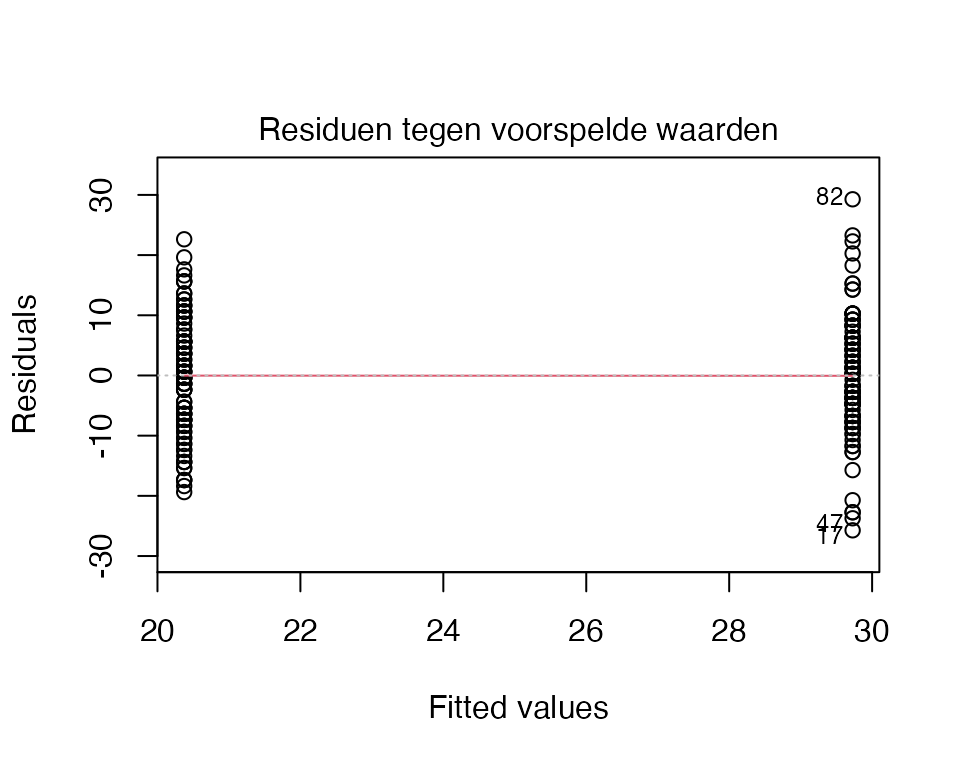
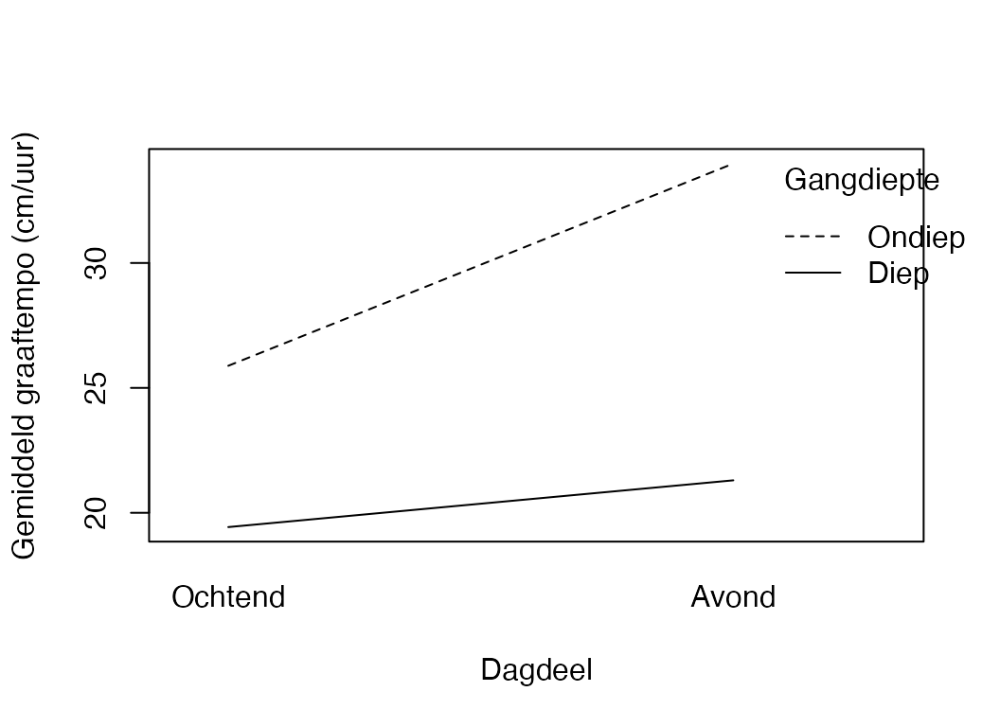

Mollen zijn gek op tunnels graven. Ondergronds, ergens tussen de wortels, hield de mol bij hoe snel zijn collega’s groeven. 198 mollen had hij langs zijn nieuwsgierige snorharen voelen schuiven, 198 verschillende — elk één werkuur lang, en bij elk noteerde hij hoeveel centimeter er in dat uur bij kwam. Het is werk, hij houdt het bij.
Bij elke mol noteerde hij ook of die in een ondiepe of een diepe gang zat — diepere bodem is compacter, dat scheelt — en of het ochtend of avond was.
“Maakt het uit hoe diep een mol zit,” mompelde hij, “of het tijdstip van de dag, of allebei?”
De mol kon niet zien. Hij was blind, zoals mollen blind zijn. Maar hij kon goed voelen, en hij kon tellen. Per collega één getal. En nu wilde hij weten: zit er verschil tussen die getallen, en zo ja, waardoor?
Wat de mol berekent heet analysis of varianceANOVA, en je stelt elke keer dezelfde drie vragen aan je gegevens:
Voorspellen de groepen samen iets? — de -toets F-test op het hele model, met als hoeveel-zegt-het.
Waar zit het verschil precies? — post-hoc-toetsen tussen specifieke groepen, en bij meerdere factoren ook de interactieinteraction.
Klopt het allemaal wel? — de aannames assumptions: gelijke varianties tussen groepen homogeneity of variance, normaal verdeelde residuen, onafhankelijke observaties.
TipWat je na dit thema moet kunnen
Na dit thema kun je:
herkennen wanneer eenweg- of meerweg-ANOVA de juiste techniek is;
een ANOVA-tabel opzetten, aanvullen en lezen (, , , );
per effect de -toets lezen en rapporteren, en en partiële uitrekenen en uitleggen — ook in een Venn-diagram;
hoofdeffecten en een interactie herkennen in een tabel of een plot, en een significant effect uitwerken met de (geschatte) gemiddelden, Tukey en een plot;
uitleggen waarom je pas na een significante post-hoc toetst, en wanneer je iets anders kiest dan Tukey: Bonferroni, Holm, Dunnett, Games-Howell, of een vooraf geplande vergelijking;
uitleggen wat een gebalanceerd design is, en waarom het uitmaakt (Type I tegenover Type III);
de aannames nagaan: met de vuistregels ( per groep, , ) en de residuplot beoordelen of je de -toets mag vertrouwen, en weten wat je doet als dat niet zo is — Brown-Forsythe of Kruskal-Wallis bij één factor, de richtingsregel bij twee.
In R doe je dat met options(contrasts = …), lm(), Anova(., type = 3), etaSquared(., type = 3), aggregate() en table(), interaction.plot(), TukeyHSD(aov(...)) en emmeans() — en na afloop zet je de codering terug.
Opmerking“ANOVA” alleen is een verwarrende naam
Strikt genomen valt vrijwel elke statistiek onder ANOVA óf regressie — variatie ontleden in delen die ergens vandaan komen. Het woord wordt pas concreet als we erbij zeggen welke:
eenweg-ANOVAone-way ANOVA — één groeperende factor;
factorial / meerweg-ANOVAfactorial ANOVA — twee of meer factoren samen, mét interactie;
repeated-measures ANOVARM-ANOVA — binnen één persoon herhaald gemeten (thema 6);
Dit hoofdstuk gaat over de eerste twee — eenweg en meerweg (soms ook factorial). Onthoud: zonder dat extra woord blijft “ANOVA” een te ruime container.
OpmerkingUnivariate — ook al staat het in een boek over multivariate analyse
Eenweg- en meerweg-ANOVA zijn nog steeds univariate analyses — er is één afhankelijke variabele . Het echte multivariate komt pas in thema 5 (MANOVA), waar je meerdere uitkomsten tegelijk vergelijkt. Tot dan: één per analyse.
OpmerkingHet doel van ANOVA is óók voorspellen — maar via groepsgemiddelden, niet
In thema 1 (MRA) voorspelden we voor een individu via een vergelijking: Bij ANOVA voorspellen we óók — alleen niet voor een individu via continue voorspellers, maar voor een groep via het groepsgemiddelde:
Het groepsgemiddelde is je beste voorspelling voor iedereen in groep . In de regressie-taal (sommige boeken doen dit expliciet via dummy- of effect-codering) heet dit ook wel de estimated marginal meanEMM: de modelvoorspelling per cel, gemiddeld over de andere factoren als die er zijn.
Onthoud: ANOVA is geen “toetsings-techniek” en MRA geen “voorspellings-techniek” — beide voorspellen, ze gebruiken alleen verschillende voorspelvormen ( versus ).
OpmerkingHoe dit hoofdstuk leest
Dit hoofdstuk volgt dezelfde drie-laagse structuur als thema 1:
Verhaal-frame — wat de mol doet of denkt.
Algemene vorm — abstract, statistiek-Latijn met Y, factor1, mijn_data.
Voor onze dieren — uitvoerend, met # hekjes en concrete namen.
Plus de antwoorden in een dichtgeklapt kader: die open je pas ná je eigen poging. T-vragen vlechten zich tussen de hoofdvragen door om je rekenintuïtie te oefenen.
Werkmaterialen — R-pakketten en functies
Wat de mol uit zijn keukenkastje pakt
Gereedschap
Waar het voor is
Pakket
lm()
Lineair model schatten — ook voor ANOVA
base
Anova(model, type = 3)
ANOVA-tabel met type III sums of squares
car
aov()
Alternatieve ANOVA-fit, handig voor TukeyHSD()
base
aggregate()
Groepsgemiddelden en standaardafwijkingen per groep uitrekenen
base
table()
Aantallen per cel
base
TukeyHSD()
Post-hoc paarsgewijze vergelijkingen
base
etaSquared(model, type = 3)
Effectgrootte en , uit de Type-III-kwadratensommen
lsr
interaction.plot()
Snelle visualisatie van een interactie
base
emmeans()
Estimated marginal means en EMM-uitwerking per niveau
emmeans
WaarschuwingVerwarrend! anova(), Anova() en summary() — drie functies, drie tabellen
Bij een gefit lm-object zijn er drie verschillende manieren om naar de modeloutput te kijken, en ze geven niet dezelfde tabel:
Functie
Pakket
Wat geeft het?
Wanneer gebruik je ’m?
summary(m)
base
Coëfficiënten-tabel + -toets voor het hele model + . Geen .
Snelle blik op coëfficiënten + modelfit. Voor regressie.
anova(m)
base
ANOVA-tabel met Type ISS (sequentieel). Volgorde van termen telt.
Alleen bij gebalanceerd design — of als je expliciet de volgorde-volgorde-test wilt. Bij regressie zelden.
Anova(m, type = 3)
car
ANOVA-tabel met Type IIISS (elk effect uniek). Volgorde maakt niet uit.
Standaardkeuze voor ANOVA met ongebalanceerde data — wat in psychologie de norm is.
Praktijk-vuistregel voor dit hoofdstuk: gebruik altijd car::Anova(., type = 3) voor ANOVA-tabellen. Voor de coëfficiënten (’s in een regressie-parameterisering, of EMM in factor-parameterisering) blijf je naar summary(m) kijken. anova(m) (kleine letter) gebruik je vrijwel nooit in dit boek — pas op dat je ’m niet per ongeluk typt en denkt dat het werkt.
Bijvalletje:Anova() (hoofdletter, car) eist options(contrasts = c("contr.sum", "contr.poly")) voor correcte Type III hoofdeffecten bij ongebalanceerde data. Zet die regel bovenaan je script, vóór je eerste lm(): R legt de codering vast op het moment dat lm() het model schat. Wie hem pas na lm() zet, verandert niets meer aan dat model.
OpmerkingWaarom Type III en niet Type I?
Bij een gebalanceerd design (gelijke aantallen per cel) maakt het niet uit: alle types geven hetzelfde antwoord. Maar zodra het ongebalanceerd is — wat in psychologisch onderzoek vrijwel altijd zo is — wijken Type I, II en III sums of squares uit elkaar. Type III geeft elke voorspeller zijn unieke bijdrage onafhankelijk van de invoervolgorde, en is daarmee de standaardkeuze voor de meeste APA-rapportages. Type I geeft de eerste factor alles wat hij kan pakken, en de volgende alleen wat er dan nog over is. Type II zit ertussen: elk hoofdeffect na correctie voor het andere hoofdeffect, maar niet voor de interactie. Daarom de regel options(contrasts = c("contr.sum", "contr.poly")) bovenaan: die zorgt dat Anova(., type = 3) de juiste antwoorden geeft.
Notatie — symbolen voor ANOVA
OpmerkingSleutelsymbolen in dit hoofdstuk
In dit oefenboek zie je telkens dezelfde notatie:
— het werkelijke gemiddelde van groep in de populatie. Onbekend; dit is wat we willen weten. Hypothesen worden hierover geformuleerd: , “in de populatie zijn alle groepsgemiddelden gelijk.”
— het steekproef-gemiddelde van groep . Wat aggregate() of mean() je geeft. Een schatter van .
— de modelvoorspelling voor elk dier in groep .
— de toetsstatistiek; verhouding van between-group variantie tot within-group variantie.
— de twee bijhorende vrijheidsgraden: tussen (, met groepen) en binnen ().
eta-squared — proportie totale variantie die de factor verklaart: een effectgrootte.
partial eta-squared — proportie variantie die de factor verklaart na aftrek van de andere factoren. In factorial designs verschilt van .
omega-squared — een minder bevooroordeelde variant van . Je komt hem tegen in tekstboeken; in dit hoofdstuk reken je met en .
In hypothese-toetsen praten we altijd over de populatie — dus daar staat altijd . In rapportages over wat je gevonden hebt, schrijf je of .
TipVuistregels zijn afspraken, geen wetten
De drempels in dit oefenboek zijn breed gangbaar, maar niet universeel. Of je de -toets mag vertrouwen, lees je af aan drie getallen:
in elke groep: dan is robuust tegen residuen die niet normaal verdeeld zijn;
: dan is robuust tegen ongelijke varianties;
(de grootste standaardafwijking minder dan twee keer de kleinste): dan zijn de varianties ongeveer gelijk.
Zijn de varianties ongelijk () én de groepen ongelijk groot (), dan is de -toets onbetrouwbaar — overweeg dan bij een eenweg-ANOVA de Brown-Forsythe-toets als alternatief (zie 2.1.b).
Handboeken kiezen hier iets andere getallen. Dit oefenboek volgt consequent één set, maar dat is een keuze, geen natuurwet: werk je met ander materiaal, kijk dan welke drempels dat aanhoudt.
OpmerkingCode in dit hoofdstuk — wat moet je kunnen typen?
Code die je zelf moet kunnen typen staat open: options(contrasts = c("contr.sum", "contr.poly")) en aan het eind weer terug naar "contr.treatment", lm(), Anova(., type = 3), etaSquared(., type = 3), aov() met TukeyHSD(), interaction.plot(), emmeans(), aggregate() en table().
Base R of dplyr. Waar je gegevens samenvat (aantallen, gemiddelden en standaardafwijkingen per groep), staan twee tabbladen naast elkaar: base R en dplyr. Ze geven dezelfde getallen, al staan de rijen soms in een andere volgorde en drukt dplyr minder cijfers af (een tibble laat er standaard drie zien; het getal erachter is hetzelfde); kies de schrijfwijze die je al gewend bent. De modelaanroepen zelf (lm(), Anova(), aov()) hebben maar één vorm. Code die alleen een plaatje of een tabel mooi maakt — nette labels, of de twee hulpfuncties van dit oefenboek die een kruispunt-tabel en een profielplot tekenen — zit achter een knopje “Toon code”. Klap hem open als je nieuwsgierig bent; zonder die hulpfuncties haal je dezelfde getallen uit aggregate() en emmeans(), en teken je de plot met interaction.plot().
Volgorde-regel. Alle library()-aanroepen bovenaan je script — vóór elk gebruik van een functie. Schuif je library(car) per ongeluk onder een Anova()- of leveneTest()-regel, dan klaagt R “could not find function”. Vervelend, en altijd dezelfde oplossing: pakket boven gebruik.
TipWerkproces — opmerkingen_jij.R ernaast
Tijdens het werken loop je per definitie tegen dingen aan: een commando dat anders werkt dan je verwacht, een zin in het oefenboek die niet helemaal klopt, een vraag waarvan je achteraf denkt “die had hier eigenlijk moeten staan.” Open daarvoor een leeg R-script naast je werkbestand, noem het bijvoorbeeld opmerkingen_jij.R, en typ daar al je shit in — letterlijke citaten, regelnummers, tijdstempels, je eigen vraag. Het script wordt niet gerund; het is je kantlijn. Stuur het naar vragen@countcamp.org (het adres staat ook onderaan elke bladzijde) en de volgende oefenboek-versie wordt iets minder ruk.
2.0 Project- en datavoorbereiding
De mol bewaart zijn aantekeningen netjes
Download de bron van dit oefenboek (de zip op de voorpagina), pak hem uit en dubbelklik op mvda_werkboek.Rproj — één project voor alle thema’s. Open daarna 02_variantieanalyse/02_variantieanalyse.qmd en draai de code vanuit dat bestand: RStudio voert een chunk uit in de map van het hoofdstuk, dus de paden kloppen. De data van dit thema ligt in 02_variantieanalyse/data/, de helper-functies in common/R/. Niets te installeren als de vier pakketten (car, lsr, emmeans, tidyverse) op je computer staan; anders één keer (tidyverse brengt dplyr mee, voor de tabbladen):
Per geobserveerde mol drie waarden: gang_diepte (ondiep/diep), dagdeel (ochtend/avond), en graaftempo (in cm/uur). gang_diepte en dagdeel zijn al factor-variabelen — R weet dat het categorieën zijn, geen getallen.
# Van welke klasse is elke variabele? Hetzelfde kan per variabele met class().sapply(mol_werkdag, class)
OpmerkingTechnisch detail: contr.sum voor Type-III SS
Onze setup zet options(contrasts = c("contr.sum", "contr.poly")). Dit is een technische voorwaarde voor car::Anova(., type = 3) om correcte hoofdeffecten te berekenen. Wat er gebeurt als je hem vergeet, hangt af van je model:
Zonder interactie (één factor, of A + B): de toetsen zijn dezelfde. Alleen de coëfficiënten in summary(lm) zien er anders uit.
Met interactie (A * B): met R’s standaard contr.treatment zijn de toetsen op de hoofdeffecten fout. Bij de mol in 2.2 wordt de voor gang_diepte dan in plaats van . De interactietoets en de EMM blijven gelijk.
Onthoud: zet deze regel bovenaan je script, vóór je eerste lm(). R legt de codering vast op het moment dat het model geschat wordt.
2.1 Eénweg ANOVA
De mol vergelijkt twee groepen
“Eerst,” zei de mol, “kijk ik alleen naar de gang-diepte. Maakt het uit of ik in een ondiepe of in een diepe gang zit?”
OpmerkingVoor je gaat rekenen — vijf vragen aan jezelf
Het stappenplan van thema 1, nu uitgebreid met stap 5: de techniek-keuze.
Wie of wat wordt er gemeten? verschillende mollen, elk één werkuur lang geobserveerd.
Wat wordt er gemeten?Drie variabelen per mol: gang_diepte, dagdeel, en graaftempo (cm/uur).
Onafhankelijk of afhankelijk?Onderzoeksvraag (deze deelvraag): voorspelt gang_diepte het graaftempo? Dan is graaftempo afhankelijk (), gang_diepte onafhankelijk ().
Meetniveau van elke variabele?graaftempo is interval (cm/uur). gang_diepte is nominaal (twee categorieën). dagdeel is nominaal (twee categorieën).
Welke techniek? Doorloop de beslisboom:
flowchart TD
A[Hoeveel afhankelijke<br/>variabelen?] -->|één| B[Y meetniveau?]
A -->|meerdere| Z[MANOVA<br/><i>thema 5</i>]
B -->|interval| C[X-en meetniveau?]
B -->|binair| D[Logistic regression<br/><i>thema 4</i>]
C -->|alleen interval| E[Multiple regression<br/><i>thema 1</i>]
C -->|alleen nominaal| F[ANOVA<br/><i>dit thema</i>]
C -->|gemengd| G[ANCOVA<br/><i>thema 3</i>]
style F fill:#faf3e2,stroke:#c9a05a,stroke-width:2px
OpmerkingPijltjes-overzicht — alle MVDA-technieken in één tabel
Dezelfde keuze, anders genoteerd. Lees als predictor(en) (meetniveau) → DV(s) (meetniveau):
#
Predictor(en)
DV(s)
Techniek
dich |X|
|Y| int
-toets
nom 3+lvl |X|
|Y| int
éénweg ANOVA
1
int |X X …|
|Y| int
MRA — thema 1
2
nom |X X|
|Y| int
factorial ANOVA — thema 2
3
nom + int |X C|
|Y| int
ANCOVA — thema 3
4
bo(in) |X|
|Y| bin
LRA — thema 4
5
nom |X|
|Y₁ Y₂ …| int
MANOVA — thema 5
6
within-subject momenten
|Y₁ Y₂ Y₃ Y₄| int
RMA — thema 6
7
indirect via
pad
Mediation — thema 7
is interval (graaftempo), is nominaal (gang_diepte). Antwoord: ANOVA. Bij twee categorieën is dat technisch hetzelfde als een -toets met gelijke variantie, maar we doen het via lm() zodat we straks naadloos kunnen uitbreiden naar twee factoren.
T1 — Eenweg, tweeweg of niets?
Drie miniatuur-onderzoeken — pen-en-papier
OpmerkingVraag T1 — Pen-en-papier
Voor elk onderzoek: bepaal aantal afhankelijke variabelen, het meetniveau van en , en kies dan de techniek.
a)De bever vergelijkt drie burcht-types — modder, hout, gemengd — op damlengte (m). Bij bevers één meting per dier. Welke techniek?
b)Een klinisch psycholoog vergelijkt drie therapie-types (CGT / EMDR / wachtlijst) en twee leeftijd-categorieën (jong-volwassen / ouder dan ) op symptoom-vermindering (schaal –). Bij cliënten. Welke techniek?
c)Een HR-team bekijkt drie afdelingen (sales / R&D / support) op zowel werktevredenheid (schaal –) als ervaren werkdruk (schaal –). Bij medewerkers, beide tegelijk. Welke techniek?
OpgeletAntwoord T1 — open na je eigen poging
a) Eén afhankelijke ( damlengte, INT) en één onafhankelijke met drie groepen (NOM). eenweg-ANOVA.
b) Eén afhankelijke ( symptoom-vermindering, INT) en twee onafhankelijke factoren (NOM × NOM). tweeweg-ANOVA (meerweg / factorial). Je krijgt dan twee hoofdeffecten + hun interactie.
c)Twee afhankelijke variabelen tegelijk (werktevredenheid én werkdruk). Geen ANOVA meer: MANOVA (thema 5).
2.1.a Inspectie en groepsgemiddelden
Voordat de mol gaat toetsen, kijkt hij naar wat er feitelijk in de groepen zit.
Algemene vorm. Tellingen per groep en groepsgemiddelden van de uitkomstvariabele:
table(mijn_data$factor) # aantallen per groepaggregate(Y ~ factor, data = mijn_data, FUN = mean) # groepsgemiddelden
# count() telt de rijen per groep.mol_werkdag |>count(gang_diepte)
gang_diepte n
1 ondiep 99
2 diep 99
# group_by() knipt de data in groepen, summarise() rekent per groep één getal uit.mol_werkdag |>group_by(gang_diepte) |>summarise(graaftempo =mean(graaftempo))
a) Hoeveel mollen zitten er in elke gang_diepte-groep? Is het design gebalanceerd?
b) Wat zijn de groepsgemiddelden? Welke groep graaft sneller, en hoe groot is het ruwe verschil?
OpgeletAntwoord 2.1 — open na je eigen poging
In gewone woorden.
In de ondiep-groep zitten 99 mollen, in de diep-groep 99. Op de marginale telling exact gelijk; binnen de cellen — daar zien we straks dat de cel-aantallen wel iets uit elkaar lopen.
Het gemiddelde tempo in de ondiepe gang () ligt hoger dan in de diepe (). Een ruw verschil van cm/uur. (Trek je de afgeronde getallen van elkaar af, dan krijg je . R rekent met de onafgeronde gemiddelden; het verschil is alleen afronding.)
APA-stijl.
De marginale aantallen waren gelijk (; ); de cel-aantallen verschilden licht (zie 2.2). In ondiepe gangen groef de mol gemiddeld sneller ( cm/uur) dan in diepe gangen ( cm/uur).
T2 — als ratio van twee varianties
OpmerkingVraag T2 — Pen-en-papier
De -toets in een eenweg-ANOVA is geen mysterie: het is een verhouding tussen twee varianties.
Bij de mol: groepen, mollen. Stel je leest in een ANOVA-tabel af: en .
a) Hoeveel zijn en ?
b) Bereken en .
c) Bereken . Dit getal moet je straks in de output van Anova(...) kunnen vinden.
OpgeletAntwoord T2 — open na je eigen poging
a) . .
b) . .
c) . Straks zie je in de Type-III-output: , . Bingo.
Inzicht. vraagt: “is de spreiding tussen de groepsgemiddelden groot ten opzichte van de spreiding binnen de groepen?” Als groepen weinig verschillen ten opzichte van wat individuen al onderling verschillen, valt .
2.1.b Aannamechecks
ANOVA leunt op drie aannames:
Normaal verdeelde residuen binnen elke groep — bij grote minder kritisch (centrale limietstelling).
Gelijke varianties tussen groepenhomogeneity of variance — nagegaan met twee vuistregels: zijn de groepen ongeveer even groot (), en zijn de standaardafwijkingen ongeveer gelijk ()? Komt in thema 3 terug bij ANCOVA, met dezelfde vuistregels.
Onafhankelijke observaties — een design-vraag, niet een data-toets. Herhaalde metingen op één dier? Dan moet je naar thema 6.
Algemene vorm.
# De vuistregels: aantallen en standaardafwijkingen per groeptable(mijn_data$factor)aggregate(Y ~ factor, data = mijn_data, FUN = sd)# Visueel: residual plot van het lm-objectplot(lm(Y ~ factor, data = mijn_data), which =1)
Voor onze dieren. De aantallen per groep heb je al uit 2.1.a; nu de standaardafwijkingen.
m_diepte <-lm(graaftempo ~ gang_diepte, data = mol_werkdag)# `sub.caption = ""` haalt de auto-ondertitel met de modelformule weg.plot(m_diepte, which =1, sub.caption ="",caption ="Residuen tegen voorspelde waarden")

OpmerkingVragen 2.1
c) Mag je de -toets vertrouwen? Loop de drie vuistregels langs: per groep, en .
d) Wat zie je in de residual plot — een rustige horizontale band, of iets verdachts?
OpgeletAntwoord 2.1 — open na je eigen poging
In gewone woorden.
Ja. Elke groep heeft 99 mollen, ruim boven de . De groepen zijn even groot: . En de standaardafwijkingen liggen dicht bij elkaar: , ver onder de . Alle drie de vuistregels zijn in orde, dus de -toets is te vertrouwen.
De residual plot toont twee verticale puntenwolken (één per groep), met vergelijkbare spreiding en zonder uitwaaiering. Geen rode vlaggen.
APA-stijl.
De vuistregels voor de robuustheid van de -toets waren vervuld: beide groepen telden 99 mollen, en . Visuele inspectie van de residual plot wees niet op afwijkingen van homoscedasticiteit.
OpmerkingRobuustheid van — wanneer mag je doorgaan
De -toets verdraagt heel wat. Twee getallen om te onthouden, één regel voor de richting:
Normaliteit — is robuust tegen niet-normaal verdeelde residuen zolang in elke groep (bij een tweeweg-ANOVA: in elke cel). Onder die grens helpt de centrale limietstelling onvoldoende; dan: Kruskal-Wallis als one-way alternatief.
Homoscedasticiteit — is robuust tegen ongelijke varianties zolang . Of de varianties echt ongelijk zijn, zegt : onder de zijn ze ongeveer gelijk. Voor een echt probleem moeten beide gelden: én . Dan: Brown-Forsythe (one-way), of bij factorial designs de richtingsregel hieronder.
Onafhankelijkheid — niet te redden met een correctie; designkeuze + repeated-measures ANOVA (thema 6).
Twee-weg richtingsregel (factorial; een voorbeeld met getallen volgt bij de olifant in 2.3). Liggen de grootste varianties in de kleinste groepen, dan is te liberaal (-waarden te klein); in de grootste groepen, dan is te conservatief (-waarden te groot). Conclusie houdt meestal stand, behalve als tussen en ligt (liberaal-context) of tussen en (conservatief-context) — dan met voorzichtigheid rapporteren.
Kortom: zijn je groepen groot genoeg en ongeveer even groot, dan verdraagt zowel scheve residuen als ongelijke spreiding — niet druk maken dus.
WaarschuwingAlarm: wanneer wordt een geschonden aanname een echt probleem?
Bij ANOVA volstaat de robuustheid van de -toets meestal voor lichte schendingen, maar kijk uit als:
Ongelijke varianties () én sterk ongelijke groepsgroottes (). Dan kan de -toets te liberaal of te conservatief worden. Gebruik dan bij een eenweg-ANOVA de Brown-Forsythe-correctie (onewaytests::bf.test()); bij een factorial design is er geen gecorrigeerde toets en volg je de richtingsregel hierboven.
Een groep sterk afwijkt van normaliteit bij kleine ( per cel). Hier helpt de centrale limietstelling niet meer; overweeg een non-parametrische Kruskal-Wallis.
Onafhankelijkheid is in twijfel (bijv. herhaalde metingen, geclusterde data). De gewone ANOVA is hier kansloos; je hebt repeated measures ANOVA nodig (thema 6).
Vuistregel: noem altijd dat je hebt gecheckt, en wat je beslist hebt te doen.
OpmerkingVoor wie verder wil — Levene’s toets voor gelijke varianties
Er bestaat ook een toets voor gelijke varianties: Levene’s toetsLevene’s test. Dit hoofdstuk werkt toch met de vuistregels, en dat is een keuze met een reden.
Of de -toets ongelijke varianties verdraagt, hangt af van twee verhoudingen — hoe ongelijk groot de groepen zijn en hoe ongelijk hun spreiding — en de vuistregels kijken daar rechtstreeks naar. Een toets kijkt naar iets anders: of je genoeg dieren had om een verschil in spreiding te zíén. Bij grote groepen wordt Levene al significant bij kleine, onschuldige verschillen in spreiding; bij kleine groepen mist hij een verschil dat er wél toe doet.
Sommige handboeken raden Levene wél aan, en in SPSS-uitvoer staat hij er vaak gewoon bij. Je komt hem dus tegen.
# Levene's toets zit in het pakket car (dat laadde je al voor Anova()).# In de kop van de uitvoer staat "center = median": R meet de spreiding rond# de mediaan in plaats van rond het gemiddelde. Dat is de standaard; laat staan.leveneTest(graaftempo ~ gang_diepte, data = mol_werkdag)
Levene's Test for Homogeneity of Variance (center = median)
Df F value Pr(>F)
group 1 0.0825 0.7742
196
# Bij twee factoren: over alle cellen tegelijk.leveneTest(graaftempo ~ gang_diepte * dagdeel, data = mol_werkdag)
Levene's Test for Homogeneity of Variance (center = median)
Df F value Pr(>F)
group 3 0.696 0.5555
194
Zo lees je hem: de nulhypothese is dat de varianties in de populatie gelijk zijn. Is Levene significant (), dan verschillen ze. Bij de mol is hij dat niet, voor de twee groepen (, ) en ook niet voor de vier cellen (, ) — hetzelfde oordeel als de vuistregels.
Een significante Levene is op zich geen ramp. Zijn de groepen ongeveer even groot (), dan blijft de -toets robuust. Je komt ook een beslisregel tegen die Levene wél gebruikt: Brown-Forsythe als Levene significant is én . De vuistregel kijkt naar de grootte van het verschil zelf, niet naar hoeveel dieren je had — en helpt je daarom beter.
2.1.c De -toets en effectgrootte
Algemene vorm.
# Eerst de codering, dan het model: R legt hem vast bij lm().options(contrasts =c("contr.sum", "contr.poly"))mijn_model <-lm(Y ~ factor, data = mijn_data)Anova(mijn_model, type =3) # ANOVA-tabel met F-toetsetaSquared(mijn_model, type =3) # eta^2 als effectgrootte
Voor onze dieren.
# Gebruikt 'm_diepte' uit de assumptie-stap hierboven; de codering stond toen# al op contr.sum (bovenaan het script gezet).Anova(m_diepte, type =3)
is de proportie totale variantie van die door de factor wordt verklaard. Lees hem als een percentage: bij de mol is , en dat betekent dat gang_diepte van de verschillen in graaftempo verklaart.
OpmerkingVoor wie verder wil — wanneer heet een effect klein, middelgroot of groot?
De woorden klein, middelgroot en groot vallen overal, meestal zonder grens erbij. Wie grenzen wil, vindt ze bij Cohen (1988):
— klein effect
— middelgroot effect
— groot effect
Voor gebruikt men dezelfde getallen. Houd rekening met je vakgebied: in experimentele psychologie zijn deze vuistmaten realistisch, in toegepaste contexten ligt de lat soms lager. En niet iedereen houdt zich eraan: je ziet een van soms al middelgroot genoemd worden, waar die volgens Cohen klein is.
WaarschuwingWat staat er in — over de steekproef of over de populatie?
De -toets in Anova(., type = 3) toetst niet iets over de mollen die je hebt gemeten — die kun je gewoon aflezen. Hij toetst iets over de mollen die je niet hebt gemeten: de hele populatie waaruit deze steekproef komt. Schrijf de nulhypothese daarom altijd in populatie-taal:
— “in de populatie van alle mollen verschillen ondiepe en diepe gangen niet in graaftempo”. Niet — dat is over je 198 mollen, en die zijn meetbaar ongelijk ( versus ). Veelgemaakte fout: schrijven met steekproefgemiddeldes erin. Steekproef = data, populatie = uitspraak.
WaarschuwingTaligheid — let op causale werkwoorden
Twee veilige formuleringen voor het gevonden effect:
“Mollen in ondiepe gangen graven gemiddeld cm/uur sneller dan mollen in diepe gangen” — vergelijking tussen groepen, observationeel.
“Het verschil in gemiddeld graaftempo tussen ondiepe en diepe gangen is cm/uur” — beschrijving van het verschil, geen oorzaak.
Wat je niet mag zeggen zonder experimentele opzet: “diepe gangen vertragen de mol”, “door de diepte daalt het tempo”, “ondiepe gangen veroorzaken sneller graven”. Dat zijn causale werkwoorden — die mag je pas gebruiken als je studie-opzet ze rechtvaardigt (manipulatie, randomisatie, voor-en-na-meting). De mol-data is een momentopname; geen ingreep, geen tijd-as. Mol-keuze voor diepe of ondiepe gang kan zelf met andere kenmerken samenhangen die het tempo verklaren — een derde-variabele-val.
TipSudoku met je ANOVA-tabel — SS, df, MS en F uit de output halen
Anova(m_diepte, type = 3) print Sum Sq, Df, F en Pr(>F). Het MS-getal (mean square) staat er niet — maar dat is gewoon . Met die identiteiten vul je de hele sudoku-tabel terug:
Cel
Formule
Voor het mol-model
(between)
uit Anova() regel “gang_diepte”
(within / Residuals)
uit Anova() regel “Residuals”
(groepen − 1)
✓
✓
Tentamenvraag-format: je krijgt een halve tabel en moet de rest invullen. Wie de identiteiten kent (, , , ) komt overal uit zonder iets uit het hoofd te leren. Sudoku.
OpmerkingVragen 2.1
e) Is het effect van gang_diepte statistisch significant? Rapporteer , , en .
f) Hoeveel procent van de verschillen in graaftempo verklaart gang_diepte?
g) Wat is je voorlopige conclusie over de mol’s vraag?
OpgeletAntwoord 2.1 — open na je eigen poging
In gewone woorden.
Het effect van gang_diepte is duidelijk aanwezig. De -toets geeft , — ruim onder de drempel van , dus statistisch significant.
De effectgrootte is : gang_diepte verklaart 18% van de verschillen in graaftempo tussen de mollen.
Voorlopige conclusie: gang_diepte maakt veel uit. In een ondiepe gang graaft de mol gemiddeld bijna tien centimeter per uur sneller dan in een diepe gang, en dat past bij wat je biologisch zou verwachten — diepere bodem is compacter. Maar pas op: dit is een eenweg-analyse die dagdeel negeert. Wat als dagdeel ertoe doet, en het diepte-effect verschilt tussen ochtend en avond? Dat zoeken we uit in 2.2.
APA-stijl.
Een eenweg-ANOVA toonde een significant effect van gang_diepte op het graaftempo, , , . In ondiepe gangen ( cm/uur) groef de mol gemiddeld cm/uur sneller dan in diepe gangen ( cm/uur).
T3 — als voorspelling
OpmerkingVraag T3 — Pen-en-papier
Bij ANOVA is de modelvoorspelling voor elk dier het gemiddelde van zijn groep:
Voor de mol-data zijn de groepsgemiddelden en cm/uur.
a) Een mol heeft gang_diepte = ondiep. Wat is voor die mol?
b) Een andere mol heeft een werkelijk graaftempo van cm/uur in een diepe gang. Wat is zijn residu ?
c) In de regressievertaling van deze ANOVA met dummy-codering (ondiep = 0, diep = 1) zou je krijgen: Wat zijn en in deze parameterisering?
OpgeletAntwoord T3 — open na je eigen poging
a) cm/uur. Dat is je beste voorspelling voor élke mol in die groep — niets meer, niets minder.
b) cm/uur.
c) (intercept = referentie-groep). (verschil tussen groepen — diep ligt cm/uur lager; met de afgeronde kom je op , alleen afronding). Dat — het verschil tussen twee groepsgemiddelden — is precies waar de -toets met één voorspeller op toetst. Met contr.sum (sum-to-zero, voor Type III, zoals bovenaan ons script) krijg je andere ’s: , het gemiddelde van de twee groepsgemiddelden, en , zoveel ligt ondiep daarboven (en diep evenveel eronder). Dezelfde voorspellingen , dezelfde .
Inzicht. Eenweg-ANOVA is een lineair regressiemodel met één gecodeerde factor. De -toets in Anova(., type = 3) is in dit geval gewoon de gekwadrateerde -toets op .
2.2 Tweeweg ANOVA — gang_diepte én dagdeel
De mol voegt een tweede vraag toe
“Maar wat,” vroeg de mol zich af, “als het diepte-effect ’s avonds anders is dan ’s ochtends? Dan is gang_diepte alleen geen eerlijk verhaal als ik dagdeel negeer.”
Dat is wat factorial ANOVA doet: twee (of meer) nominale factoren tegelijk, plus hun interactie interaction. Een interactie betekent: het effect van factor A is niet hetzelfde voor alle niveaus van factor B. Het effect van A op zichzelf — gemiddeld over de niveaus van B — heet het hoofdeffectmain effect van A.
In dit hoofdstuk volgen we een conventie: factor A is de rij-factor, factor B is de kolom-factor. Bij de mol: (rijen) en (kolommen). Die zelfde A=rij, B=kolom-afspraak gebruiken we straks bij de olifant en bij de dassen.
TipEerst , dán groter — een leervolgorde
Een factorial design heeft minstens twee factoren met elk twee of meer niveaus. De kleinst mogelijke factoriële opzet is : vier cellen, twee hoofdeffecten en één interactie. Daarmee zie je exact hetzelfde patroon dat in een of design speelt — alleen overzichtelijker.
Daarom de mol-data eerst in (gang_diepte × dagdeel): hier ontstaat het hele begrip interactie in vier zinnen. Bij de olifant verderop kruipen we naar , en straks bij de dassen een design met meer niveaus. Vuistregel voor jezelf: als je een nieuwe techniek leert, begin met het kleinste voorbeeld waarin het patroon nog werkt. Bij multipele regressie is dat twee voorspellers (niet drie), bij ANOVA is dat . Pas als je daar geen moeite mee hebt, schaal je op.
# Gemiddelden per cel: group_by() met twee factoren maakt vier groepen.mol_werkdag |>group_by(gang_diepte, dagdeel) |>summarise(graaftempo =mean(graaftempo), .groups ="drop")
a) Welke combinatie van gang_diepte en dagdeel scoort het hoogst? Welke het laagst?
b) Is het verschil tussen ondiep en diep even groot in de ochtend als in de avond? Wat zegt dat over een mogelijke interactie?
OpgeletAntwoord 2.2 — open na je eigen poging
In gewone woorden.
De combinatie ondiep + avond scoort het hoogst ( cm/uur). De diep + ochtend-cel scoort het laagst ().
In de ochtend is het verschil tussen ondiep () en diep () modest (; met de afgeronde gemiddelden hierboven kom je op , maar R en de tabel rekenen met de onafgeronde). In de avond is dat verschil veel groter ( vs , ). Dat is een teken van interactie: het effect van gang_diepte is groter in de avond dan in de ochtend.
APA-stijl.
Inspectie van de celgemiddelden suggereerde een interactie tussen gang_diepte en dagdeel: in de avond lag het tempo in ondiepe gangen ( cm/uur) 12.68 cm/uur hoger dan in diepe gangen (), terwijl dat verschil in de ochtend kleiner was (; ; ).
T4 — Interactie tekenen
OpmerkingVraag T4 — Pen-en-papier
Hieronder vier mini-tabellen met cel-gemiddelden voor een design (factor A heeft twee niveaus ; factor B heeft twee niveaus ). Voor elk geval: wat zie je — alleen hoofdeffect , alleen hoofdeffect , alleen interactie, of zowel hoofd- als interactie-effect?
Vier keer vier celgemiddelden
Geval
(i)
4
6
4
6
(ii)
4
6
6
4
(iii)
4
4
6
6
(iv)
4
5
6
9
Note. Elke kolom is één cel van het -design: een niveau van samen met een niveau van .
a) Schets voor elk geval de interactieplot in je hoofd: x-as , twee lijnen voor . Welk geval heeft parallelle lijnen, en welke snijdende of uiteenwijkende lijnen?
b) Welk geval is een kruis-interactie (lijnen kruisen)? En een spreiding-interactie (lijnen waaieren uit, kruisen niet)?
OpgeletAntwoord T4 — open na je eigen poging
(i): hoofdeffect van alleen ( voor beide -niveaus, even groot verschil). Lijnen parallel, niet horizontaal.
(ii): alleen interactie. Geen overall hoofdeffecten (gemiddelden over : 5 en 5; over : 5 en 5), maar de richting van het -effect flipt tussen en . Lijnen kruisen. Klassieke kruis-interactie.
(iii): hoofdeffect van alleen. Lijnen parallel en horizontaal (geen -effect).
(iv): zowel hoofdeffecten als interactie. Beide hoofdeffecten positief, en in is het -effect groter dan in . Lijnen waaieren uit zonder te kruisen — spreiding-interactie.
Vuistregel. Parallelle lijnen geen interactie. Niet-parallelle lijnen interactie. Hoeveel niet-parallel zegt iets over de grootte van het interactie-effect; of de toets significant is hangt ook af van .
2.2.b Het tweeweg-model en de plot
Algemene vorm.
options(contrasts =c("contr.sum", "contr.poly")) # vóór lm()mijn_model <-lm(Y ~ factor1 * factor2, data = mijn_data)Anova(mijn_model, type =3)etaSquared(mijn_model, type =3)interaction.plot(x.factor = mijn_data$factor1,trace.factor = mijn_data$factor2,response = mijn_data$Y)
De * in de formule (factor1 * factor2) betekent: zowel beide hoofdeffecten als hun interactie meenemen. Schrijf je factor1 + factor2, dan krijg je alleen de hoofdeffecten — geen interactie.
Voor onze dieren. Eerst de vuistregels, nu voor de vier cellen. De aantallen per cel heb je uit 2.2.a; nu de standaardafwijkingen per cel.
# Codering vóór lm(): R legt hem vast op het moment dat het model geschat wordt.options(contrasts =c("contr.sum", "contr.poly"))m_factorial <-lm(graaftempo ~ gang_diepte * dagdeel, data = mol_werkdag)Anova(m_factorial, type =3)
Toon code (interactieplot met nette labels; de kale vorm staat hierboven)
# Interactieplot: x-as is dagdeel (kolom-factor B),# lijnen voor gang_diepte (rij-factor A).# Tijdelijke factoren met hoofdletter-niveaus voor leesbare as- en# legend-labels — onderliggende data blijft ongewijzigd..dagdeel_lbl <-factor(tools::toTitleCase(as.character(mol_werkdag$dagdeel)),levels = tools::toTitleCase(levels(mol_werkdag$dagdeel))).diepte_lbl <-factor(tools::toTitleCase(as.character(mol_werkdag$gang_diepte)),levels = tools::toTitleCase(levels(mol_werkdag$gang_diepte)))interaction.plot(x.factor = .dagdeel_lbl,trace.factor = .diepte_lbl,response = mol_werkdag$graaftempo,ylab ="Gemiddeld graaftempo (cm/uur)",xlab ="Dagdeel",trace.label ="Gangdiepte")

TipSpiekbrief — vrijheidsgraden en SS-decompositie voor factorial ANOVA
Bij een factorial design (factor met niveaus, factor met niveaus, observaties totaal) decomponeer je de totale SS in vier stukken: hoofdeffect , hoofdeffect , interactie , en error. De vrijheidsgraden lopen mee:
Bron
Hoofdeffect
Hoofdeffect
Interactie
Error (within)
—
Totaal
—
—
Identiteiten:
— altijd.
— alleen in een gebalanceerd design, met in elke cel evenveel observaties. Bij ongelijke cellen tellen de Type-III-kwadratensommen uit Anova(..., type = 3) niet precies op tot — ze kunnen er zelfs boven uitkomen. De mol heeft 52, 47, 49, 50 dieren per cel, en daar komen de vier stukken samen op 23868: méér dan , dezelfde totale kwadratensom van graaftempo als in de sudoku van 2.1.
(per regel)
(drie F’s: één per hoofdeffect, één voor interactie)
— met uit de Type-III-tabel en de totale kwadratensom. Precies dat rekent etaSquared(., type = 3) uit.
Voor de mol ( gang_diepte, dagdeel, ):
De vrijheidsgraden van het tweeweg-model van de mol
Bron
df
gang_diepte ()
1
dagdeel ()
1
gang_diepte × dagdeel ()
1
Error
194
Totaal
197
Note. Error = de residuen binnen de vier cellen.
Check: . ✓
Bij een design krijg je , , , . Bij : , , , . De formule verandert niet — alleen de getallen.
Het kruispunt — celgemiddelden, marginalen en effecten in één blik
Het kruispunt is waar A en B elkaar ontmoeten. Je ziet er vier paden (de cellen), twee marginal-richtingen (rij en kolom) en het centrale punt waar alles samenkomt (de grand mean). Hieronder twee zienswijzen op dezelfde data — de tabel en het profile plot. Kies wat je het meest helpt.
De 2D-tabel toont elk celgemiddelde plus de marginalen (rij-marg = effect van gang_diepte = factor A; kolom-marg = effect van dagdeel = factor B); de profile plot dezelfde getallen visueel. Let op de namen in de tabel: de kolom Marginaal B is gemiddeld óver de niveaus van heen, en bevat dus de rij-marginalen van . De rij Marginaal A is gemiddeld over heen. (Het onderschrift van de profielplot noemt diezelfde getallen andersom, naar de factor waarvan het de niveaus zijn: Marginaal Dagdeel.) Dezelfde afspraak zit in de punt van : de punt staat op de plek van de factor waarover je middelt. Probeer steeds heen-en-weer te zien: een rij-vergelijking in de tabel = een verschuiving van de hele lijn-set omhoog/omlaag in de plot; een kolom-vergelijking = een verschuiving links↔︎rechts; interactie = niet-parallelle lijnen.
Toon code (hulpfunctie van dit oefenboek)
apa_marginals_table( m_factorial,factor_A ="gang_diepte", # A = rij-factorfactor_B ="dagdeel", # B = kolom-factordata = mol_werkdag,dependent_label ="graaftempo (cm/uur)",factor_A_label ="Gangdiepte",factor_B_label ="Dagdeel",caption ="Mol — graaftempo per cel met EMM-marginalen")
Mol — graaftempo per cel met EMM-marginalen
Gangdiepte
Dagdeel
Marginaal B
Ochtend
Avond
Ondiep
25.88 (9.15, 52)
33.98 (9.42, 47)
29.93
Δ Ondiep − Diep
6.46
12.68
—
Diep
19.43 (9.43, 49)
21.30 (10.12, 50)
20.36
Marginaal A
22.66
27.64
25.15
Note. Cellen tonen M (SD, n) op basis van graaftempo (cm/uur); rij- en kolom-marginalen zijn ongewogen estimated marginal means (EMM); rechtsonder de grand mean. Hoofdeffect Gangdiepte: F(1, 194) = 49.77, p < .001 — H0: alle rij-marginalen gelijk (μA⋅’s gelijk). Hoofdeffect Dagdeel: F(1, 194) = 13.50, p < .001 — H0: alle kolom-marginalen gelijk (μ⋅B’s gelijk). Interactie Gangdiepte × Dagdeel: F(1, 194) = 5.26, p = .023 — H0: cel-patronen additief (geen interactie).
De interactie-toets vraagt: “is het verschil tussen en ongelijk over de niveaus van ?” In de kruispunt-tabel zie je dat aan de verschilrij (): als die getallen onderling verschillen, is er interactie. Als ze ongeveer gelijk zijn, is er geen interactie.
Concreet bij de mol: , . Het verschil-tussen-verschillen is . Dát is wat de interactie-toets onderzoekt — al wordt het in -vorm gerapporteerd. De interactie-coëfficiënt () in een regressie-parameterisering is precies dat verschil-tussen-verschillen, eventueel geschaald met de cel-codering.
Bij een design (zoals de dassen) zit dezelfde logica in de verschilkolom: de drie cel-verschillen , , zijn ongelijk interactie.
OpmerkingTabel ↔︎ Plot heen-en-weer
Met het kruispunt van hierboven (tabel en plot). Houd de A=rij, B=kolom-conventie aan: , (rijen); , (kolommen).
a) Welke twee paden vergelijk je voor het hoofdeffect van (gang_diepte)? Schrijf ze op met hun symbool ( etc.).
b) Welke twee paden voor het hoofdeffect van (dagdeel)?
c) Op welk punt landt een mol waarvan we alleen weten dat hij in conditie (ochtend) is geobserveerd? Wat is je beste voorspelling voor het graaftempo?
d) Diezelfde mol, maar nu weten we ook dat hij in een ondiepe gang zat (). Op welke kruispunt-cel land je nu?
e) Wat zou je in de plot zien als de interactie precies nul was? Schets in woorden.
f) Welke kruispunt-cel valt op in de plot? Klopt dat met de -waarde voor de interactie in de tabel?
OpgeletAntwoord — open na je eigen poging
a) De twee rij-marginalen vergelijk je. Ze staan in de laatste kolom van de tabel, die Marginaal B heet: gemiddeld óver de niveaus van heen. Dus: (ondiep, marginaal over dagdeel) versus (diep, marginaal over dagdeel). Concreet: (ondiep) tegen (diep) cm/uur.
b) De twee kolom-marginalen (laatste rij, Marginaal A: gemiddeld óver heen): (ochtend, marginaal over gang_diepte) versus (avond). Concreet: (ochtend) tegen (avond).
c) Met alleen bekend pak je de kolom-marginaal van : cm/uur.
d) Met zowel als bekend pak je de cel zelf: cm/uur. Voor ondiep-ochtend valt het iets boven de kolom-marginaal van — dat past bij de extra informatie dat het ondiep was.
e) Bij interactie = nul lopen de lijnen van ondiep en diep parallel — het verschil tussen ochtend en avond zou voor ondiep en diep even groot zijn (bv. beide , of beide ).
f) Vooral het kruispunt ondiep × avond trekt de aandacht: in de avond loopt de ondiep-lijn flink omhoog (van naar ), terwijl de diep-lijn nauwelijks beweegt (van naar ). De lijnen lopen niet parallel; in de avond is het diepte-effect bijna dubbel zo groot als in de ochtend. Dat niet-parallel zijn correspondeert met , voor de interactie — significant, dus het patroon is niet aan toeval toe te schrijven.
Vuistregel. Hoofdeffect = lijnen samen omhoog of omlaag. Interactie = lijnen niet-parallel. Tabel en plot zijn twee talen voor hetzelfde feit.
OpmerkingVragen 2.2
c) Mag je de -toets vertrouwen? Loop de vuistregels langs voor de vier cellen.
d) Welke effecten zijn significant? Rapporteer , en voor gang_diepte, dagdeel én interactie.
e) Hoeveel variantie verklaart elk effect ( en )?
f) Wat zie je in de interactieplot? Lopen de lijnen parallel, of niet?
OpgeletAntwoord 2.2 — open na je eigen poging
In gewone woorden.
Ja. De cellen tellen 47 tot 52 mollen, dus overal minstens . , onder de . En , onder de . (Dat het twee keer 1.11 is, is toeval.) De -toets is te vertrouwen.
In de Type III ANOVA-tabel: het hoofdeffect van gang_diepte is sterk significant (, ). Het hoofdeffect van dagdeel is ook significant, en duidelijk kleiner van omvang (, ). De interactie is eveneens significant, met de kleinste van de drie (, ).
Effectgroottes (dit oefenboek rapporteert primair kale ; ter info erbij): gang_diepte , dagdeel , interactie . In procenten: gang_diepte verklaart 19% van de variantie in graaftempo, dagdeel 5% en de interactie 2%. Ter vergelijking: ligt iets hoger (gang_diepte , dagdeel , interactie ). De volgorde is duidelijk: gang_diepte verklaart veruit het meest, dan dagdeel, dan de interactie als kleinste effect.
In de interactieplot zie je de lijnen voor ondiep en diep niet parallel lopen: de ondiep-lijn stijgt sterker van ochtend naar avond dan de diep-lijn. Dat is precies wat een interactie visueel betekent: de twee factoren werken niet onafhankelijk.
APA-stijl.
Een tweeweg-ANOVA met gang_diepte en dagdeel als factoren toonde een significant hoofdeffect van gang_diepte, , , . Het hoofdeffect van dagdeel was eveneens significant, , , . Beide hoofdeffecten werden gekwalificeerd door een significante interactie tussen gang_diepte en dagdeel, , , . Aan de vuistregels voor robuustheid was voldaan: 47 tot 52 mollen per cel, en .
TipWat de mol opmerkte
“Als de interactie significant is, mag ik de hoofdeffecten niet meer in hun eentje interpreteren. Het diepte-effect is in de avond bijna twee keer zo groot als in de ochtend. Eén ongedifferentieerd hoofdeffect rapporteren zou hier liegen — alsof gang_diepte op elk moment van de dag hetzelfde doet.”
T5 — Type I, II, III: maakt het uit?
OpmerkingVraag T5 — Pen-en-papier
In een gebalanceerdbalanced factorial design (gelijke per cel) geven Type I, II en III sums of squares Type III sum of squaresidentieke -waarden. In een ongebalanceerdunbalanced design (zoals de mol-data — lichtelijk ongebalanceerd, varieert van 47 tot 52 per cel, ) verschillen ze.
a) Waarom past Type III bij APA-rapportage van de hoofdeffecten in een ongebalanceerd factorial design? (Hint: denk aan “uniek na correctie voor de andere effecten”.)
b) Wat zou er fout kunnen gaan als je per ongeluk Type I gebruikt op ongebalanceerde data en de volgorde van factoren in je lm()-formule wijzigt?
OpgeletAntwoord T5 — open na je eigen poging
a) Type III rekent voor elke term de unieke bijdrage na correctie voor alle andere termen in het model. Dat correspondeert met de gangbare APA-vraag: “is dit hoofdeffect / deze interactie nog significant als de andere effecten al meegenomen zijn?” Type III geeft de juiste -toets bij ongebalanceerde data, mits de contrasten op contr.sum staan.
b) Type I sums of squares zijn sequentieel: de eerste factor krijgt al zijn variantie, de tweede alleen wat overblijft, en zo verder. In een ongebalanceerd design verandert daardoor het resultaat als je Y ~ A + B schrijft of Y ~ B + A. Twee onderzoekers zouden zonder dat ze het doorhebben verschillende - en -waarden voor dezelfde data rapporteren. Type II en Type III zijn invariant onder volgorde-veranderingen; Type III bij voorkeur omdat hij ook de interactie correct corrigeert.
TipVooruitkijken — de vrijheidsgraden van de olifant
Met de spiekbrief van hierboven kun je het volgende onderzoek alvast narekenen. De olifant in 2.3 heeft een -design: (leeftijd), (slaap), . Dan , , , en . Som: . Check in 2.3 of de tweede van elke -toets inderdaad is.
2.2.c De interactie interpreteren — EMM per niveau van de andere factor
Wanneer de interactie significant is, ga je terug naar de cell means en beschrijf je het patroon zo concreet mogelijk. De route is: estimated marginal means per niveau van de andere factor (emmeans(model, ~ A | B)), aangevuld met de cell means uit het kruispunt en de interactieplot. Geen aparte simple-effects-toetsen; die term gebruiken we hier niet.
WaarschuwingHoofdeffecten bij een significante interactie — gekwalificeerd, niet weggelaten
Een hoofdeffect (bv. “ondiepe gangen leveren gemiddeld meer cm/uur dan diepe”) is een uitspraak over de rij-marginalenmarginal mean — het gemiddelde over alle -condities. Maar als de interactie significant is, bestaat dat marginal-gemiddelde uit ongelijke patronen: het verschil tussen ondiep en diep is niet hetzelfde in de ochtend als in de avond.
Zo pak je het aan:
Rapporteer alle drie de toetsen (, , , ) voor hoofdeffect , hoofdeffect , en de interactie. Niets weglaten.
Bij een significante interactie: voeg de zin “deze hoofdeffecten worden gekwalificeerd door een significante interactie” toe (in het Engels: “qualified by”). Het hoofdeffect is dan dus geen zelfstandige conclusie meer.
Werk de interactie inhoudelijk uit via de estimated marginal means per niveau van de andere factor (emmeans(model, ~ A | B)) — niet via aparte simple-effects-toetsen, die term gebruiken we hier niet. Plus de cell means uit het kruispunt en de interactieplot.
Een verzonnen voorbeeld (niet de mol-data van hierboven): stel het verschil ondiep − diep is in de ochtend en in de avond. Het marginal-verschil is (gemiddeld over dagdelen). Een hoofdeffect-toets met rapporteer je wel, maar de inhoudelijke conclusie komt uit de cell-patronen — daar zien we dat ondiep alleen ’s ochtends echt voor ligt; in de avond zijn ze gelijk of zelfs omgekeerd. Dat is wat de interactie zegt.
Onthoud dat Engelse qualified by: het is een gangbare uitdrukking voor deze relatie tussen hoofdeffect en interactie, en in je APA-zin precies het woord dat je nodig hebt.
OpmerkingWat ANOVA vergelijkt: EMM, niet descriptives
Bij een ongebalanceerd design lopen twee soorten gemiddelden uit elkaar:
Gewogen marginal mean (descriptives): . De cel-grootte weegt mee. Wat je krijgt als je aggregate() of mean() op de raw data toepast.
Ongewogen marginal mean (EMM, estimated marginal mean): . Elke cel krijgt gelijke weeg, ongeacht . Wat emmeans() rapporteert.
Bij balanced (alle gelijk): de twee zijn identiek. Bij unbalanced: ze divergeren — soms minimaal, soms substantieel. ANOVA met Type III SS toetst altijd de EMM-verschillen — dat zijn de “schone” effecten waarbij elke cel-conditie gelijke invloed heeft op het marginal-gemiddelde, ongeacht hoeveel observaties er toevallig in zaten.
Een verzonnen voorbeeld: stel je hebt mollen in een ondiepe gang (waarvan ’s ochtends en ’s avonds geteld) en mollen in een diepe gang ( ’s ochtends, ’s avonds). Het gewone gemiddelde van de ochtend trekt dan zwaar naar de ondiepe gang: van de ochtend-mollen komen daar vandaan. De EMM van de ochtend is gewoon — een eerlijke vergelijking, hoe de mollen ook verdeeld zijn.
Daarom: rapporteer in een ANOVA-context EMM voor marginal-effecten, niet de descriptives-tabel. emmeans(model, ~ factor_A) geeft je die direct.
# EMM (ongewogen, gelijke weeg per cel).emmeans(m_factorial, ~ gang_diepte)
NOTE: Results may be misleading due to involvement in interactions
gang_diepte emmean SE df lower.CL upper.CL
ondiep 29.9 0.960 194 28.0 31.8
diep 20.4 0.958 194 18.5 22.3
Results are averaged over the levels of: dagdeel
Confidence level used: 0.95
Boven de EMM staat een melding: NOTE: Results may be misleading due to involvement in interactions. Die is geen fout van jou — R zegt hetzelfde als de mol hierboven: er zit een interactie in het model, dus lees een marginaal gemiddelde niet in zijn eentje.
In de mol-data is het verschil bescheiden — het design is lichtelijk ongebalanceerd (), dus de twee soorten gemiddelden divergeren maar een fractie ( tegenover ). Bij sterk ongebalanceerde designs kan dat verschil groot worden — en dan rapporteer je de EMM, niet de descriptives.
# Estimated marginal means per cel — EMM-uitwerking per niveau.# Effect van dagdeel binnen elk niveau van gang_diepte:emm <-emmeans(m_factorial, ~ dagdeel | gang_diepte)emm
g) Beschrijf in eigen woorden — niet via de cijfers, maar via wat de mol doet — wat de interactie betekent.
h) Lees in de EMM per niveau af hoeveel cm/uur de avond boven de ochtend ligt: in ondiepe gangen, en in diepe gangen.
OpgeletAntwoord 2.2 — open na je eigen poging
In gewone woorden (g). In een ondiepe gang verschilt het tempo flink tussen ochtend en avond — ’s avonds graaft de mol daar duidelijk sneller. In een diepe gang maakt het dagdeel nauwelijks uit; de compactere bodem laat zich niet door tijd-van-de-dag overhalen. Het effect van dagdeel hangt dus af van waar hij zit.
Een mogelijke (speculatieve!) interpretatie: in losse, ondiepe grond profiteert hij van de avondkoelte of van het nachtritme; in compacte, diepe bodem wordt het tempo gelimiteerd door de bodem zelf, niet door zijn dagschema.
EMM per niveau (h). In ondiepe gangen ligt de avond cm/uur boven de ochtend. In diepe gangen is dat maar cm/uur. Het verschil tussen die twee verschillen is de interactie, en die is significant.
APA-stijl.
De significante interactie weerspiegelde dat het effect van dagdeel op het graaftempo afhing van gang_diepte. In ondiepe gangen lag het tempo in de avond () 8.1 cm/uur boven dat in de ochtend (); in diepe gangen was dat verschil klein (; ).
OpmerkingVoor wie verder wil — het verschil per niveau ook toetsen
Hierboven werkte je de interactie uit met de EMM per niveau en de plot. Je kunt het verschil per niveau ook nog toetsen. Zo’n toets heet een simple effect: het effect van dagdeel, binnen één niveau van gang_diepte. pairs() doet het:
In ondiepe gangen is het verschil tussen ochtend en avond significant, , ; in diepe gangen niet, , . Het minteken komt doordat pairs() ochtend min avond rekent.
BelangrijkDon’t: post-hoc tests doen zonder significante
Wanneer je groepen vergelijkt en de overall niet significant is, moet je niet alsnog Tukey of een ander post-hoc draaien om “te zien of er ergens toch een verschil zit”. Dat verhoogt je Type-I-foutrisico enorm. De -toets is je gatekeeper: opent hij de deur, dan mag je naar binnen om te kijken welke paren verschillen. Sluit hij hem, dan is het stop.
Uitzondering: in factorial designs kun je per significant hoofdeffect of significante interactie post-hoc gaan kijken — niet over de hele tabel, alleen waar het ANOVA-bewijs het rechtvaardigt.
OpmerkingMultiple testing — waarom we corrigeren
Als je toetsen tegelijk doet op — bijvoorbeeld paren groepen vergelijken — dan is de kans dat minimaal één vals-positief is, gelijk aan . Voor 3 paren is dat . Voor 6 paren al . Daarom: corrigeer. (We gebruiken hier voor het aantal toetsen; blijft het aantal groepen.)
Methoden:
Bonferroni: deel door . Streng, conservatief, simpel. Toets: .
Holm-Bonferroni: sequentieel — sorteer p-waarden, kleinste eerst. Toets eerste tegen , tweede tegen , etc. Krachtiger dan Bonferroni.
Tukey HSD: speciaal voor alle paarsgewijze vergelijkingen na ANOVA. Balanceert FWER en power.
Dunnett: alleen versus controle-groep — meer power dan Tukey omdat minder paren.
Games-Howell: de Tukey-variant voor als de groepen én ongelijk groot zijn én ongelijke varianties hebben — daar kan Tukey zelf het laten afweten.
Vuistregel: Tukey voor “alle paren”. Bonferroni als veilige default voor andere multiple-testing-situaties. Holm als je Bonferroni-power te krap vindt.
OpmerkingVoor wie verder wil — nog drie correcties: Šidák, Scheffé en de FDR
Šidák: , met toetsen. Iets minder streng dan Bonferroni bij onafhankelijke toetsen.
Scheffé: voor willekeurige contrasten (ook lineaire combinaties van groepen, niet alleen paren). Strengst van allemaal, omdat de familie het breedst is. Kies hem als je gerichte maar niet vooraf geplande contrasten wilt toetsen na een significante .
Benjamini-Hochbergfalse discovery rate, FDR: bewaakt niet de kans op minstens één vals alarm, maar het verwachte aandeel valse alarmen onder je significante uitkomsten. Gangbaar bij grote families van toetsen.
In R gaan ze allemaal via pairs() op de EMM, of via p.adjust() op een rij -waarden die je al hebt:
pairs(emmeans(mijn_model, ~ factor), adjust ="bonferroni") # of "holm", "scheffe"p_vector <-c(.012, .030, .041) # drie p-waarden uit je eigen toetsenp.adjust(p_vector, method ="holm") # of "bonferroni", "BH"
T6 — versus
OpmerkingVraag T6 — Pen-en-papier
In een tweeweg-ANOVA print etaSquared() twee kolommen: eta.sq () en eta.sq.part ().
a) Waarom is altijd?
b) Bij de mol-tweeweg-ANOVA staat in de Type-III-tabel: , , , . De totale kwadratensom van graaftempo kennen we uit de sudoku van 2.1: . Bereken en voor de interactie.
OpgeletAntwoord T6 — open na je eigen poging
a) heeft alleen “effect + residu” in de noemer, terwijl ook andere effecten in de noemer meeneemt (groter). Voor dezelfde teller geeft dat . Bij eenweg-ANOVA geldt (geen andere effecten); bij meerweg-ANOVA loopt het uiteen.
b)Kale (primair in dit oefenboek): .
Partial (ter vergelijking): .
Past bij wat etaSquared(m_factorial, type = 3) print. Let op de noemer van : dat is , niet de som van de vier stukken uit de tabel. Die som is hier , méér dan , omdat het design niet gebalanceerd is (zie de spiekbrief).
Inzicht. Waarom rapporteer je dan welke? Dit oefenboek zet kale voorop: alle effecten delen dezelfde noemer, , zodat je ze rechtstreeks naast elkaar kunt leggen. In een gebalanceerd design zijn het dan stukken van één taart (zie de Venn-diagrammen hieronder); in een ongebalanceerd design zoals dit tellen ze niet precies op, zoals je hierboven zag. is gangbaar in SPSS-output (SPSS toont alleen ) en bij meta-analyses. Wij geven hier beide; in modelantwoorden staat voorop en erachter.
Eta-squared versus partial eta-squared in beeld — Venn-diagrammen
Waarom partial eta-squared kan optellen tot meer dan een
Hoofdrekenbaar voorbeeld om het verschil scherp te krijgen. Stel je hebt een tweeweg-ANOVA met , , , , en dus .
: één cirkel voor alle variatie in , de hele taart. , en de interactie steken er elk met een eigen cirkel in.
Toon code (illustratie)
# venn_plakjes() rekent uit waar de cirkels moeten staan, zodat elke plak# precies het oppervlak heeft dat je vraagt. Hij komt uit ../common/R/venn.R,# geladen in het eerste blok van dit hoofdstuk. Hier staat alleen hoe het# eruitziet. vb_eta en vb_ss zijn de getallen van het voorbeeld hierboven.v <-venn_plakjes(vb_eta)kleur <-c(A ="#0077BB", B ="#CCBB44", AB ="#EE7733") # zoals in de plaatjes hieronderrand <-function(nm) v$randen[v$randen$naam == nm, ]buiten <- v$cirkels[v$cirkels$naam !=".doel", ]r <- v$straalpar(mar =c(0, 0, 0, 0))plot.new()plot.window(xlim =range(v$plekken$naam_x) +c(-0.3, 0.3),ylim =range(buiten$y) +c(-1, 1) * (r +0.12), asp =1)# De effectcirkels: een rand en een zweem kleur. Wat buiten de middelste# cirkel valt, hoort niet bij Y en telt niet mee.for (nm innames(vb_eta)) {with(rand(nm), polygon(x, y, col =adjustcolor(kleur[[nm]], 0.08),border = kleur[[nm]], lwd =1.5))}# De middelste cirkel, alle variatie in Y: grijs, de kleur van het residu.with(rand(".doel"), polygon(x, y, col ="white", border =NA))with(rand(".doel"), polygon(x, y, col =adjustcolor("#BBBBBB", 0.55), border =NA))# De plakken, in de kleur van hun effect (op wit, zodat de kleur dezelfde is# als hieronder).for (nm innames(vb_eta)) {with(v$lenzen[v$lenzen$naam == nm, ], {polygon(x, y, col ="white", border =NA)polygon(x, y, col =adjustcolor(kleur[[nm]], 0.55), border =NA) })}with(rand(".doel"), lines(x, y, col ="grey25", lwd =2))# Namen buiten de cirkels. Elk getal in het midden van zijn plak, als het daar# helemaal in past (alle vier de hoeken van het woord binnen beide cirkels);# anders ernaast, met een pijltje naar de plak.past_in_plak <-function(x, y, tekst, mx, my, cex =1) { b <-strwidth(tekst, font =2, cex = cex) /2 h <-strheight(tekst, font =2, cex = cex) /2 hx <- x +c(-b, b, -b, b) hy <- y +c(-h, -h, h, h)all(hx^2+ hy^2<= r^2& (hx - mx)^2+ (hy - my)^2<= r^2)}for (i inseq_len(nrow(v$plekken))) {with(v$plekken[i, ], { opzij <-cos(hoek * pi /180)# font = 4: vet en cursief, zoals A, B en Y in de tekst.text(naam_x, naam_y, naam, font =4, col = kleur[[naam]],adj =if (opzij <-0.3) 1elseif (opzij >0.3) 0else0.5) getal <-apa(vb_eta[[naam]]) m <- buiten[buiten$naam == naam, ]if (past_in_plak(wijs_x, wijs_y, getal, m$x, m$y)) {text(wijs_x, wijs_y, getal, font =2) } else {arrows(getal_x +0.3* (wijs_x - getal_x), getal_y +0.3* (wijs_y - getal_y), wijs_x, wijs_y, length =0.06)text(getal_x, getal_y, getal, font =2) } })}# Het residu in het grijs dat overblijft, en de naam Y net buiten de rand, op# de plek die het verst van de effectcirkels af ligt (vb_y_hoek, uitgerekend in# het verborgen blok bovenaan, zodat de alt-tekst dezelfde plek noemt).text(v$rest$x, v$rest$y, paste0("Residu\n", apa(vb_ss[["Residu"]] / vb_SST)),font =2, cex =0.85, col ="grey20")text(1.18* r *cos(vb_y_hoek), 1.18* r *sin(vb_y_hoek), "Y", font =4, col ="grey25")
— één cirkel voor alle variatie in (), met per effect een eigen plak. Alle cirkels zijn even groot; hoe groot een effect is, zie je aan hoe diep zijn cirkel in steekt.
Waar een cirkel in steekt, kleurt hij een plak: het deel van dat dat effect verklaart. Wat buiten uitsteekt, hoort bij de factor zelf en niet bij ; voor telt alleen de plak.
De drie plakken overlappen niet, want in een gebalanceerd design (in elke cel even veel waarnemingen) delen de effecten niets. Wat er grijs overblijft, is het residu: .
Elke plak gedeeld door de hele taart:
Som: — past binnen , zoals het hoort bij een netjes verdeelde taart.
: dezelfde taart, maar per effect gum je de andere twee weg, alsof ze er voor deze effectgrootte even niet waren. Voor verdwijnen de plakken van en . Wat er dan nog gekleurd is, de plak van plus het grijze residu, is de noemer: . Die kleinere noemer maakt het verschil: dezelfde plak van is van een groter deel dan van de hele taart, namelijk .
Toon code (illustratie)
# Drie keer de taart van hierboven: dezelfde tekening (v), dezelfde kleuren en# dezelfde schaal, dus het residu is in alle drie even groot. Per paneel blijft# één effect staan; van de andere twee wordt de plak wit en de cirkel# gestippeld. v, kleur, rand, buiten, r en past_in_plak() komen uit het blok# van het plaatje hierboven.paneel <-function(eff) { weg <-setdiff(names(vb_eta), eff)plot.new()plot.window(xlim =range(v$plekken$naam_x) +c(-0.3, 0.3),ylim =range(buiten$y) +c(-1, 1) * (r +0.12), asp =1)# De weggegumde effectcirkels: alleen een stippellijn.for (nm in weg) with(rand(nm), lines(x, y, col ="grey70", lty =2))with(rand(eff), polygon(x, y, col =adjustcolor(kleur[[eff]], 0.08),border = kleur[[eff]], lwd =1.5))# De taart: grijs, met de plak van dit effect in zijn kleur ...with(rand(".doel"), polygon(x, y, col ="white", border =NA))with(rand(".doel"), polygon(x, y, col =adjustcolor("#BBBBBB", 0.55), border =NA))with(v$lenzen[v$lenzen$naam == eff, ], {polygon(x, y, col ="white", border =NA)polygon(x, y, col =adjustcolor(kleur[[eff]], 0.55), border =NA) })# ... en de plakken van de andere twee weggegumd: wit, met een stippelrand.# Eerst de rand van Y, dan het gummen eroverheen: anders loopt de dichte# rand door langs de witte happen, en lijkt de taart nog heel.with(rand(".doel"), lines(x, y, col ="grey25", lwd =2))for (nm in weg) {with(v$lenzen[v$lenzen$naam == nm, ], {polygon(x, y, col ="white", border ="white", lwd =4)polygon(x, y, col =NA, border ="grey55", lty =2, lwd =1.5) }) }# Namen: dit effect in zijn kleur, de weggegumde in lichtgrijs.for (i inseq_len(nrow(v$plekken))) {with(v$plekken[i, ], { opzij <-cos(hoek * pi /180)text(naam_x, naam_y, naam, font =4,col =if (naam == eff) kleur[[naam]] else"grey70",adj =if (opzij <-0.3) 1elseif (opzij >0.3) 0else0.5) }) } pl <- v$plekken[v$plekken$naam == eff, ] m <- buiten[buiten$naam == eff, ] getal <-apa(vb_eta[[eff]])# Een paneel is smaller dan het plaatje hierboven, dus het getal iets kleiner.if (past_in_plak(pl$wijs_x, pl$wijs_y, getal, m$x, m$y, cex =0.9)) {text(pl$wijs_x, pl$wijs_y, getal, font =2, cex =0.9) } else {arrows(pl$getal_x +0.3* (pl$wijs_x - pl$getal_x), pl$getal_y +0.3* (pl$wijs_y - pl$getal_y), pl$wijs_x, pl$wijs_y, length =0.06)text(pl$getal_x, pl$getal_y, getal, font =2, cex =0.9) }text(v$rest$x, v$rest$y, paste0("Residu\n", apa(vb_res)), font =2, cex =0.85, col ="grey20")text(1.18* r *cos(vb_y_hoek), 1.18* r *sin(vb_y_hoek), "Y", font =4, col ="grey25")# Boven het paneel welk effect het is (de interactie heet hier zoals in de# spiekbrief), eronder de som: de plak gedeeld door wat er gekleurd over is.title(main =if (eff =="AB") quote("Interactie"~italic(A) %*%italic(B))elsebquote("Hoofdeffect"~italic(.(eff))),font.main =1, line =0.6)# Twee regels, zodat de noemer ook als één getal te zien is.mtext(paste0(getal, " / (", getal, " + ", apa(vb_res), ")"), side =1, line =0.3)mtext(paste0("= ", getal, " / ", apa(vb_eta[[eff]] + vb_res), " = ", apa(vb_etap[[eff]])),side =1, line =1.5)}par(mfrow =c(1, 3), mar =c(3, 0, 2, 0), cex =1)for (eff innames(vb_eta)) paneel(eff)
— per effect dezelfde taart, met de twee andere effecten weggegumd (wit, met een stippelrand). De noemer is wat er gekleurd overblijft: de plak van het effect plus het grijze residu.
Hetzelfde in kwadratensommen (de valt in teller en noemer weg): elke plak gedeeld door wat er van de taart gekleurd overblijft.
Som: — bijna over de heen. In andere voorbeelden kan wél boven uitkomen; dat is geen fout, het laat zien dat elk effect zijn eigen “submap” krijgt waarin de andere effecten zijn weggehaald.
TipDe boodschap
geeft elk effect dezelfde noemer, . In een gebalanceerd design is dat één taart van , verdeeld over alle effecten plus residu, en tellen de proporties netjes op. Daarom is hier je primaire effectgrootte. vraagt per effect: “hoeveel verklaar ik als de andere effecten er even niet waren?” Daardoor mag de som boven uitkomen — handig voor vergelijking met SPSS-output of meta-analyses, maar in modelantwoorden secundair.
2.2.d Balanced versus unbalanced — herkennen en wat het ertoe doet
Het balanced/unbalanced-onderscheid hoort bij de stof: je moet een gebalanceerd design kunnen herkennen en kort uitleggen wat het uitmaakt. Bij elke ANOVA-opdracht vraag je je dus af: zijn de cellen even groot?
OpmerkingBalanced versus unbalanced — wat is het verschil?
Een factorial design is balanced als de aantallen per cel gelijk zijn ( overal gelijk). Bij balanced designs:
de hoofdeffecten en interactie zijn orthogonaal — onafhankelijk van elkaar;
, schoon opgeteld;
de drie effecten kunnen “zonder elkaar” gemeten worden — Type I, II en III sums of squares geven identieke -waarden.
Bij unbalanced designs (verschillende cel-grootten) overlappen de effecten in het verklaarde-variantie-deel. Daarom maakt het uit hoe je de SS toekent (Type I/II/III) — en welke je rapporteert. In de praktijk is bijna elk psychologisch onderzoek lichtelijk ongebalanceerd (drop-outs, niet-respons), dus Type III is meestal de juiste keuze.
TipHoe herken je een gebalanceerd design — twee routes
Route 1 (tellen). Tel de cellen met table(factor1, factor2). Alle cellen even groot? Gebalanceerd.
Route 2 (de kwadratensommen). Tel de kwadratensommen van de effecten op: . Komt dat precies uit op wat het hele model verklaart, , dan is het design gebalanceerd; anders niet.
De table() geeft mollen per cel: niet overal gelijk. Route 2 zegt hetzelfde: de drie effecten samen zijn , terwijl het model verklaart. Het mol-design is lichtelijk ongebalanceerd (, ruim binnen de -robuustheidsgrens). Voor de praktijk: Type III aanhouden, EMM rapporteren, en je bent klaar.
OpmerkingVoor wie verder wil — een derde route: verwachte celaantallen
Bij een gebalanceerd design geldt voor élke cel: elk celaantal is het product van de twee marginale aantallen, gedeeld door het totaal. Klopt dat voor één cel niet, dan is het design niet gebalanceerd. Handig als je alleen de marginale aantallen hebt.
De echte aantallen () wijken daar een beetje van af: niet gebalanceerd.
Balanced versus unbalanced in beeld — twee Venns
Waar Type I, II, III hetzelfde of verschillend antwoorden
Een hoofdrekenbaar voorbeeld om de twee situaties naast elkaar te zien.
Balanced — twee disjuncte cirkels binnen de totaal-ruimte. , , geen overlap. Type I, Type II en Type III geven identiek antwoord, want er is geen gedeeld stuk om over te onderhandelen.
Balanced — , , geen overlap. Type I/II/III: identiek.
Unbalanced — cirkels overlappen: , , en een gedeeld stuk .
Type I (volgorde eerst): krijgt het hele stuk inclusief overlap, ; krijgt alleen het unieke deel, .
Type I (volgorde eerst): krijgt overlap mee, ; krijgt alleen uniek, .
Type III (uniek na correctie voor de ander): beide effecten krijgen alleen hun unieke stuk, en . De overlap “hoort bij niemand” — die wordt niet aan of toegekend.
Hand-rek-regel: , . De overlap reist mee met wie als eerste binnenstapt in Type I.
Unbalanced — uniek , uniek , overlap . Type I (volgorde-afhankelijk) versus Type III (alleen uniek).
TipWat de plaatjes zeggen
Bij balanced raken de cirkels elkaar niet — er valt niets te onderhandelen, dus alle SS-types vallen samen. Bij unbalanced is er een gedeeld stuk; wie dat krijgt hangt af van de SS-keuze. Type III zegt: “geen van beide” — alleen de unieke bijdragen. Vandaar dat Type III de standaard is voor APA-rapportage in ongebalanceerde designs.
2.3 Tweeweg met drie niveaus — het geheugen van de olifant
Een tweede onderzoek, een nieuwe gast
Tegen het einde van de middag kwam de olifant langs. “Mol,” zei hij, “ik heb ook een onderzoekje gedaan. Van olifanten zeggen ze dat ze nooit iets vergeten. Ik wilde weten hoe dat bij de anderen zit — en wat helpt om iets te onthouden.”
De olifant legde elk dier een rij van veertig voorwerpen voor — een eikel, een veer, een steentje — en vroeg later hoeveel het er nog wist. Wat er tussen kijken en navragen gebeurde, liet hij een dobbelsteen beslissen: het dier bleef wakker, deed een dutje, of sliep een hele nacht — in de data heten die drie wakker, dutje en nachtslaap. En hij noteerde of het een jong of een oud dier was. Zo testte hij 126 dieren, en per dier noteerde hij één getal: hoeveel voorwerpen het onthouden had.
Dit is een factorial design — meer levels op één van de factoren. De analyse is structureel hetzelfde als 2.2, maar met één factor die drie niveaus heeft: dat geeft de mogelijkheid (en bij significantie: noodzaak) van post-hoc tests om uit te zoeken welke slaap-niveaus van elkaar verschillen.
# Alle drie in één tabel: per cel het aantal, het gemiddelde en de SD.olifant_geheugen |>group_by(leeftijd, slaap) |>summarise(n =n(),gemiddelde =mean(onthouden),sd =sd(onthouden),.groups ="drop")
De vuistregels en de richtingsregel in actie. Drie getallen:
de kleinste cel telt 17 dieren — minstens ;
— onder de ;
— onder de . (Dat het twee keer 1.41 is, is toeval.)
De grootste spreiding zit wel in de kleinste cel: oude dieren na een dutje ( bij ). Volgens de richtingsregel uit 2.1.b wordt dan te liberaal: te snel significant, dus vaker een Type-I-fout (een vals alarm). Maar dat gevaar speelt alleen als de varianties echt verschillen én de cellen echt ongelijk groot zijn, en dat is hier geen van beide. De -toets kun je dus vertrouwen.
options(contrasts =c("contr.sum", "contr.poly")) # vóór lm()m_olifant <-lm(onthouden ~ leeftijd * slaap, data = olifant_geheugen)Anova(m_olifant, type =3)
# Tukey HSD over de slaap-factor — mag alleen omdat# het hoofdeffect van slaap significant is.tk_slaap <-TukeyHSD(aov(onthouden ~ slaap, data = olifant_geheugen))tk_slaap
Tukey multiple comparisons of means
95% family-wise confidence level
Fit: aov(formula = onthouden ~ slaap, data = olifant_geheugen)
$slaap
diff lwr upr p adj
dutje-wakker 3.545029 0.9560913 6.133967 0.0042406
nachtslaap-wakker 5.964858 3.4588554 8.470860 0.0000003
nachtslaap-dutje 2.419829 -0.1965291 5.036186 0.0761516
OpmerkingVragen 2.3
a) Welke effecten zijn significant? Rapporteer , , en per effect.
b) Welke slaap-paren verschillen significant volgens Tukey HSD?
c) Beschrijf de interactie in woorden: hoe verschilt het effect van slaap tussen jonge en oude dieren?
OpgeletAntwoord 2.3 — open na je eigen poging
In gewone woorden. De vuistregels zijn in orde (zie hierboven), dus de -toetsen zijn te vertrouwen.
Het hoofdeffect van slaap is sterk: , , . Het hoofdeffect van leeftijd is niet significant: , , . De interactie is wel significant: , , .
Tukey HSD over slaap: dutje versus wakker — significant (, verschil voorwerpen). Nachtslaap versus wakker — significant (, verschil ). Nachtslaap versus dutje — niet significant (). Het grote contrast zit dus tussen wakker en de twee soorten slaap; dutje en nachtslaap onderling verschillen minder duidelijk.
Let op welke gemiddelden je naast de Tukey zet. TukeyHSD(aov(onthouden ~ slaap)) vergelijkt de gewone groepsgemiddelden: dutje . De kruispunt-tabel hierboven geeft per slaapconditie de EMM, waarin jong en oud even zwaar meetellen: dutje . Ze wijken af omdat de cellen niet even groot zijn. De modelzin hieronder zet de gewone gemiddelden naast de Tukey, omdat dat de getallen zijn die hij vergelijkt.
De interactie: wie wakker bleef, onthield als jong en als oud dier ongeveer evenveel ( tegen voorwerpen). Na een dutje onthielden de oude dieren meer dan de jonge ( tegen ). Na een nachtslaap was het andersom: nu onthielden de jonge dieren meer ( tegen ). Slapen hielp jong én oud, maar niet op dezelfde manier: de oude dieren hadden het meest aan een dutje, de jonge aan een hele nacht. Daarom zegt het hoofdeffect van leeftijd zo weinig — gemiddeld over de drie condities heffen de twee kruisende verschillen elkaar grotendeels op.
APA-stijl.
Een tweeweg-ANOVA met leeftijd en slaap als factoren op het aantal onthouden voorwerpen liet een significant hoofdeffect van slaap zien, , , , dat werd gekwalificeerd door een significante interactie tussen leeftijd en slaap, , , . Het hoofdeffect van leeftijd was niet significant, , , . Aan de vuistregels voor robuustheid was voldaan: 17 tot 24 dieren per cel, en . Tukey-HSD-vergelijkingen over de slaapcondities lieten zien dat dieren die wakker bleven minder voorwerpen onthielden () dan dieren die een dutje deden (; ) en dan dieren die een nacht sliepen (; ). Dutje en nachtslaap verschilden onderling niet significant ().
T7 — Welke post-hoc, en wanneer?
OpmerkingVraag T7 — Pen-en-papier
In de olifantdata is het hoofdeffect van slaap (3 niveaus) significant; we kiezen Tukey HSD voor paarsgewijze vergelijkingen.
a) Hoeveel paren slaapcondities zijn er om te vergelijken? Hoeveel paren in totaal voor een 4-niveau-factor? (Algemeen: .)
b) Tukey HSD past de -waarde aan voor het aantal vergelijkingen — familywise error rateFWER. Wat zou er gebeuren als je in plaats daarvan drie aparte -toetsen zou doen, allemaal op , zonder correctie?
c) Welke andere post-hoc-procedures ken je naast Tukey, en wanneer kies je iets anders?
OpgeletAntwoord T7 — open na je eigen poging
a) Bij 3 niveaus: paren (wakker-dutje, wakker-nachtslaap, dutje-nachtslaap). Bij 4 niveaus: paren. Het aantal explodeert met .
b) Met drie ongecorrigeerde toetsen op stijgt de kans op minstens één Type-I-fout naar . Bij zes toetsen . Je vindt veel “significant” door toevallige variatie.
c) De drie kern-procedures, plus Holm als sequentiële variant:
Tukey HSD — voor alle paarsgewijze vergelijkingen na een significant hoofdeffect. Balanceert FWER en power. Gangbare default voor “welke paren verschillen?”. Werkt op aov()-objecten.
Bonferroni — deel door het aantal toetsen . Werkt voor elk multiple-testing-scenario, niet alleen paren. Streng en conservatief, maar simpel uit te leggen. Veilige default als Tukey niet past (bv. niet-paarsgewijze vergelijkingen).
Holm-Bonferroni — sequentiële Bonferroni-variant: sorteer -waarden, toets de kleinste tegen , de volgende tegen , etc. Even streng op de FWER, maar krachtiger dan vanille-Bonferroni. Vrijwel altijd te verkiezen boven gewone Bonferroni.
Dunnett — alleen vergelijkingen met één gekozen controle-groep; behoudt veel power omdat het aantal vergelijkingen kleiner is dan bij Tukey ( in plaats van ).
Daarnaast: Games-Howell — de Tukey-variant voor als de groepen zowel ongelijk groot zijn als ongelijke varianties hebben; daar kan Tukey zelf het laten afweten.
2.4 Eenweg met drie groepen — Tukey en geplande vergelijkingen
De olifant kwam terug, een paar dagen later. “Mol, ik wil de eenweg-versie zien — alleen slaap, drie groepen, geen leeftijd. Gewoon de basisvorm.”
Soms is de tweeweg-vraag een omweg en wil je gewoon: één factor met drie of meer niveaus, en dan kijken of er groepsverschillen zijn. We gebruiken dezelfde olifantdata, maar nu alleen met slaap als factor.
options(contrasts =c("contr.sum", "contr.poly")) # vóór lm()m_slaap <-lm(onthouden ~ slaap, data = olifant_geheugen)Anova(m_slaap, type =3)
TipWat doet aov() en waarom verschilt dat van lm() plus Anova()?
aov() fit hetzelfde model als lm(), maar print zijn summary() als ANOVA-tabel met Type ISS (sequentieel). Voor eenweg-designs of gebalanceerde tweeweg-designs maakt het niet uit. Voor ongebalanceerde tweeweg-designs gebruik je lm() + Anova(., type = 3). TukeyHSD() werkt alleen op een aov()-object — vandaar dat we voor post-hoc óf aov() óf emmeans() aanroepen.
Tukey op deze eenweg-ANOVA is precies wat je in 2.3 al deed — dezelfde regel, dezelfde uitvoer:
TukeyHSD(aov(onthouden ~ slaap, data = olifant_geheugen))
Dat is geen toeval: ook in 2.3 draaide Tukey op een aov() met alleen slaap erin.
Geplande vergelijkingen. Tukey vergelijkt achteraf alle paren. Heb je vóóraf, op grond van theorie, één of twee gerichte vragen — bijvoorbeeld “onthouden dieren meer als ze slapen dan als ze wakker blijven?” — dan kun je die als geplande vergelijkingplanned comparison toetsen. Je legt de vergelijking vast voordat je de data ziet, je doet minder toetsen, en daardoor heb je meer power dan bij een zoektocht langs alle paren.
OpmerkingVoor wie verder wil — geplande contrasten uitrekenen in R
Stel je hebt drie slaap-niveaus en je wilt twee specifieke vragen beantwoorden:
Slaap versus wakker — gemiddelde van dutje en nachtslaap versus wakker: .
Nachtslaap versus dutje — alleen die twee tegen elkaar: .
Twee contrasten zijn orthogonaalorthogonal als . Bij drie niveaus passen er maximaal orthogonale contrasten in; samen gebruiken ze alle vrijheidsgraden voor de tussen-groepen-variatie. Orthogonale contrasten zijn elkaars onafhankelijke vragen — ze dubbelen niet.
emmeans() plus contrast() voert ze uit. In de code staat het eerste contrast gedeeld door , als : dan is de schatting meteen het verschil tussen het gemiddelde van de twee slaapgroepen en wakker. De toets ( en ) verandert daar niet door.
Het contrast slaap versus wakker is sterk significant: dieren die sliepen onthielden meer dan dieren die wakker bleven, , . Het contrast nachtslaap versus dutje is óók significant, , : na een nachtslaap onthielden dieren meer dan na een dutje. De grote sprong zit tussen wakker en welke slaap dan ook, en daarbinnen is er nóg een kleinere — maar wel detecteerbare — sprong tussen dutje en nachtslaap.
Tukey tegenover een gepland contrast. De Tukey-vergelijking van dutje en nachtslaap gaf hierboven (niet significant); het geplande contrast op hetzelfde paar geeft (wel significant). Beide kloppen — ze beantwoorden net iets andere vragen. Tukey corrigeert voor het feit dat je drie paren tegelijk vergelijkt, en zet de drempel hoger om de kans op een vals alarm over de hele familie binnen te houden (de familywise error rate). Een gepland contrast doet die correctie niet, omdat je vooraf — voordat je de data zag — precies déze vraag formuleerde. Hetzelfde paar getallen, twee correctielogica’s, twee conclusies — en allebei goed te verdedigen, mits je vooraf je strategie hebt vastgelegd.
T8 — Niet-significante interactie: wat dan?
OpmerkingVraag T8 — Pen-en-papier
Stel je doet een tweeweg-ANOVA en de interactie is niet significant (, ). Hoofdeffect wel (, ). Hoofdeffect ook (, ).
a) Mag je nu de hoofdeffecten los interpreteren? Waarom (niet)?
OpgeletAntwoord T8 — open na je eigen poging
a) Ja. Bij niet-significante interactie zijn de hoofdeffecten zinvol los te interpreteren: het effect van is voor alle -niveaus statistisch hetzelfde (binnen toeval), en omgekeerd. Je rapporteert ze als “het effect van was X, ongeacht .” Dit is precies het tegenovergestelde van een significante interactie.
OpmerkingVoor wie verder wil — de interactie dan maar uit het model halen?
Een collega zegt: “Haal de interactie uit het model — een additief model is parsimonieuser en geeft scherpere hoofdeffecten.” Dat advies is soms gepast: in een a-priori additief model (de theorie zegt dat en los van elkaar werken) en bij een grote steekproef kan een additief model schoner zijn. Het werkt minder goed bij kleine steekproeven — een niet-significante interactie betekent niet dat hij afwezig is, alleen dat we hem niet konden aantonen. Bij twijfel: laat hem in het model en rapporteer: “interactie niet significant; hoofdeffecten konden onafhankelijk worden geïnterpreteerd.”
Een andere collega zegt: “Interactie weglaten is gevaarlijk; je verstopt mogelijke kruis-effecten.” Ten dele waar. Je verstopt niets als je de interactie hebt getoetst, niet-significant vond, en dat rapporteert. Je verstopt wel iets als je hem stilletjes weglaat. Voor de lezer is altijd het beste: rapporteer de hele tabel inclusief interactie, en vertel pas in de tekst dat je de hoofdeffecten los interpreteert.
OpmerkingVoor wie verder wil — power en het aantal proefpersonen per cel
Een onderzoeker ontwerpt een factorial design. Cohen (1988) suggereert voor (middelgroot) en ongeveer – observaties per cel om power te halen. Dat is proefpersonen, of bij per cel .
Heeft hij er maar , dan zijn dat er gemiddeld per cel, en zakt de power voor middelgrote effecten naar ongeveer –. Zijn opties:
het design vereenvoudigen (bv. één factor weglaten);
genoegen nemen met alleen grote effecten kunnen detecteren ();
een binnen-persoons-design overwegen, waarbij elke proefpersoon alle condities doorloopt — veel hogere power per proefpersoon (komt in thema 6);
niet doen: door-toetsen tot je iets vindt en dat rapporteren (-hacking).
Tabachnick en Fidell (2007) noemen een design pas echt te ongebalanceerd bij , als óók Levene significant is. Hun advies: balanceer waar je kunt, en als het echt niet kan, gebruik Type III en rapporteer het expliciet. De vuistregel in dit hoofdstuk is strenger: robuust zolang .
OpmerkingVoor wie verder wil — Welch-ANOVA
oneway.test() in R doet standaard een Welch-ANOVA — een variant van eenweg-ANOVA die niet aanneemt dat de varianties gelijk zijn. Hij is robuust tegen ongelijke varianties en ongelijke groepsgroottes, en juist die twee samen laten de gewone ANOVA misgaan.
Welch berekent een gecorrigeerd via de Welch-Satterthwaite-formule. Dat is lager dan en niet noodzakelijk een geheel getal; bij een flinke ongelijkheid in varianties daalt het sterk, en dan toetst hij conservatiever.
Bij twee groepen is Welch-ANOVA hetzelfde als Welch’s -toets, de versie van de -toets voor ongelijke varianties. Zo geven ook de gewone -toets (var.equal = TRUE) en de gewone eenweg-ANOVA met dezelfde -waarde, met .
oneway.test(graaftempo ~ gang_diepte, data = mol_werkdag, var.equal =FALSE)
R-spiekblad bij ANOVA
Alle commando’s op één plek
Pakketten en data laden
# Pakketten activeren — één keer per sessie.library(car) # voor Anova(., type = 3)library(lsr) # voor etaSquared()library(emmeans) # voor estimated marginal means en EMM-uitwerking per niveaulibrary(dplyr) # alleen als je de dplyr-schrijfwijze gebruikt# Type III SS vereist sum-to-zero contrasten op factoren.# Bovenaan, vóór je eerste lm(): R legt de codering vast bij lm().options(contrasts =c("contr.sum", "contr.poly"))# Eerste dataset laden — object 'mol_werkdag' verschijnt vanzelf.load("data/mol_werkdag.RData")# Tweede dataset laden — object 'olifant_geheugen' verschijnt vanzelf.load("data/olifant_geheugen.RData")# Snelle inkijk: structuur, factor-niveaus, eerste waarden.str(mol_werkdag)
Verkenning en vuistregels — aantallen, gemiddelden en standaardafwijkingen
# Aantallen per groep (eenweg) of per cel (factorial).table(mol_werkdag$gang_diepte)table(mol_werkdag$gang_diepte, mol_werkdag$dagdeel)# Groepsgemiddelden / cel-gemiddelden van Y.aggregate(graaftempo ~ gang_diepte, data = mol_werkdag, FUN = mean)aggregate(graaftempo ~ gang_diepte * dagdeel, data = mol_werkdag, FUN = mean)# Standaardafwijkingen per cel, voor de vuistregel s_max / s_min < 2.aggregate(graaftempo ~ gang_diepte * dagdeel, data = mol_werkdag, FUN = sd)
# Aantallen per groep (eenweg) of per cel (factorial).mol_werkdag |>count(gang_diepte)mol_werkdag |>count(gang_diepte, dagdeel)# Groepsgemiddelden / cel-gemiddelden van Y.mol_werkdag |>group_by(gang_diepte) |>summarise(graaftempo =mean(graaftempo))mol_werkdag |>group_by(gang_diepte, dagdeel) |>summarise(graaftempo =mean(graaftempo), .groups ="drop")# Standaardafwijkingen per cel, voor de vuistregel s_max / s_min < 2.mol_werkdag |>group_by(gang_diepte, dagdeel) |>summarise(graaftempo =sd(graaftempo), .groups ="drop")
Aannames checken — residual plot
# De vuistregels lees je af uit de aantallen en SD's hierboven:# n >= 15 per groep, n_max / n_min <= 1.5, s_max / s_min < 2.# Residual plot van het lm-object.plot(lm(graaftempo ~ gang_diepte, data = mol_werkdag), which =1)
OpmerkingVoor wie verder wil — Brown-Forsythe en Kruskal-Wallis in R
Wanneer je ze kiest, staat in 2.1.b. Zo draai je ze:
# Brown-Forsythe — alternatieve robuuste F-toets bij ongelijke varianties.# install.packages("onewaytests") # eerste keeronewaytests::bf.test(graaftempo ~ gang_diepte, data = mol_werkdag)# Kruskal-Wallis — non-parametrisch alternatief bij kleine n + non-normaliteit.kruskal.test(graaftempo ~ gang_diepte, data = mol_werkdag)
Model fitten en samenvatten
# Eenweg-ANOVA via lm() + Anova(). De contrasten staan al bovenaan op contr.sum.m1 <-lm(graaftempo ~ gang_diepte, data = mol_werkdag)Anova(m1, type =3)etaSquared(m1, type =3)# Tweeweg-ANOVA — let op de * voor hoofdeffecten + interactie.# A = gang_diepte (rij-factor), B = dagdeel (kolom-factor).m2 <-lm(graaftempo ~ gang_diepte * dagdeel, data = mol_werkdag)Anova(m2, type =3)etaSquared(m2, type =3)# Klaar met ANOVA? Zet de codering terug op R's standaard, anders geldt# contr.sum ook in je volgende regressie.options(contrasts =c("contr.treatment", "contr.poly"))
# Tukey HSD: alleen na significant hoofdeffect, op aov-object.TukeyHSD(aov(onthouden ~ slaap, data = olifant_geheugen))# Estimated marginal means per niveau van de andere factor.emm <-emmeans(m2, ~ dagdeel | gang_diepte)emm
Voorbeeld-tentamenvragen
Even oefenen op tentamen-toon
Onderaan dit hoofdstuk staan vier korte theorievragen in tentamen-stijl en één mini R-opdracht. Geen verhaal-frame meer: hier oefen je zoals op het tentamen. Hou de vuistregels uit dit hoofdstuk paraat: per groep, en voor de aannames; lees je als een proportie verklaarde variantie; Tukey alleen na een significant hoofdeffect.
Theorie en handreken
OpmerkingVraag E1 — -tabel aflezen
Een bever bestudeert een vergelijking van vier soorten dam-bouwhout (eik / wilg / berk / esdoorn) op damstevigheid (kN/m). Hij rapporteert dit fragment uit een eenweg-ANOVA-tabel.
R
Anova Table (Type III tests)
Response: stevigheid
Sum Sq Df F value Pr(>F)
houtsoort 84.6 3 7.230 0.0002 ***
Residuals 312.0 80
Hoeveel proefdammen () hadden in totaal aan deze studie meegedaan?
OpgeletAntwoord E1 — open na je eigen poging
c) . , met groepen, dus .
OpmerkingVraag E2 — eta-squared interpreteren
In een onderzoek bij de uilenwacht naar het effect van lichtsterkte (3 niveaus) op alertheid lezen we: , , .
Welke conclusie volgt het beste uit deze cijfers?
Het effect is statistisch significant; lichtsterkte verklaart bijna alle verschillen in alertheid.
Het effect is statistisch significant; lichtsterkte verklaart van de variantie in alertheid.
Het effect is statistisch niet significant; verder onderzoek nodig.
Eta-squared boven wijst altijd op multicollineariteit.
OpgeletAntwoord E2 — open na je eigen poging
b) is letterlijk de proportie verklaarde variantie: is . Optie a overdrijft — dat is lang niet alles —, c miskent het significante , d verwart met VIF.
OpmerkingVraag E3 — interactie-grafiek lezen
Bij de kerkuilen worden uilen onderzocht in een design: veld (open / bos) en maan (volle / nieuwe). Uitkomst: aantal succesvolle vangsten per nacht. De interactieplot ziet er zo uit:
veld = open, maan = volle:
veld = open, maan = nieuwe:
veld = bos, maan = volle:
veld = bos, maan = nieuwe:
Welke uitspraak past het best bij dit patroon?
Hoofdeffect veld, maar geen interactie.
Hoofdeffect maan, maar geen interactie.
Vooral een interactie: het effect van maan is sterk verschillend in open versus bos.
Geen enkel effect; alle cellen verschillen verwaarloosbaar.
OpgeletAntwoord E3 — open na je eigen poging
c) In het open veld is het maan-effect klein (, +). In het bos juist sterk negatief bij nieuwe maan (, −). Lijnen niet parallel duidelijke interactie. De marginalen suggereren ook hoofdeffecten, maar bij een sterke interactie zoals deze interpreteer je ze niet los.
OpmerkingVraag E4 — wanneer post-hoc?
Een ecoloog doet een eenweg-ANOVA met vier vegetatie-types als factor en soortenrijkdom als uitkomst. Hij rapporteert: , , .
Hij overweegt of hij Tukey HSD nu mag draaien om alsnog te zien welke vegetatie-types onderling verschillen.
Wat is het juiste advies?
Ja, want met verklaart vegetatie toch 7% van de soortenrijkdom.
Ja, mits hij Bonferroni-correctie toepast in plaats van Tukey.
Nee: de overall is niet significant; post-hoc verhogen het Type-I-foutrisico zonder toetsbasis.
Nee, want bij vier groepen mag je alleen Scheffé gebruiken, niet Tukey.
OpgeletAntwoord E4 — open na je eigen poging
c) De gangbare conventie: post-hoc-toetsen alleen ná een significant ANOVA-hoofdeffect. Met is er geen toetsbasis om verder paren te onderzoeken — dat zou neerkomen op -hacking via een achterdeurtje. Een matige kan in theorie wijzen op een te kleine (lage power); het juiste antwoord is dan repliceren met meer dieren, niet de huidige data verder uitpluizen.
R-practical opdrachtje
De dassen-burcht
OpmerkingVraag E5 — Mini-ANOVA bij de dassen
Een ecoloog onderzoekt hoe lang dassen ’s nachts foerageren — hun foerageertijd (in minuten) — onder twee factoren: bodem (zand / klei / leem; drie niveaus) en seizoen (zomer / winter; twee niveaus). Bij dassen is per dier de gemiddelde foerageertijd vastgelegd, samen met het bodemtype waarop ze hun burcht hebben en het seizoen van meting. De dataset staat in data/dassen_burcht.RData en bevat het object dassen_burcht. Sla je R-commando’s op in één scriptbestand: dassen.R. Gebruik .
a) Mag je de -toets vertrouwen? Loop de vuistregels langs met de aantallen en standaardafwijkingen per cel.
b) Voer een tweeweg-ANOVA uit (Type III). Welke effecten zijn significant? Rapporteer de toetsstatistiek, de vrijheidsgraden en de p-waarde per effect.
c) Welk effect heeft de grootste ? Hoeveel procent van de variantie in foerageertijd verklaart het?
d) Maak een interaction.plot() met bodem op de x-as en lijnen voor seizoen. Beschrijf in één zin het patroon.
OpgeletAntwoord E5 — open na je eigen poging
load("data/dassen_burcht.RData")# De vuistregels: aantallen en standaardafwijkingen per cel.table(dassen_burcht$bodem, dassen_burcht$seizoen)
zomer winter
zand 14 13
klei 13 13
leem 12 13
aggregate(foerageertijd ~ bodem * seizoen, data = dassen_burcht, FUN = sd)
options(contrasts =c("contr.sum", "contr.poly")) # vóór lm()m_das <-lm(foerageertijd ~ bodem * seizoen, data = dassen_burcht)Anova(m_das, type =3)
Anova Table (Type III tests)
Response: foerageertijd
Sum Sq Df F value Pr(>F)
(Intercept) 1083733 1 4288.548 < 2.2e-16 ***
bodem 13676 2 27.059 0.000000001722 ***
seizoen 5496 1 21.749 0.000013946484 ***
bodem:seizoen 2238 2 4.428 0.01536 *
Residuals 18195 72
---
Signif. codes: 0 '***' 0.001 '**' 0.01 '*' 0.05 '.' 0.1 ' ' 1
etaSquared(m_das, type =3)
eta.sq eta.sq.part
bodem 0.34152555 0.4291053
seizoen 0.13725558 0.2319950
bodem:seizoen 0.05588776 0.1095272
De kale interactieplot is interaction.plot(dassen_burcht$bodem, dassen_burcht$seizoen, dassen_burcht$foerageertijd); hieronder dezelfde met nette labels.
Het kruispunt voor het dassen-design (3 × 2), met de hulpfuncties van dit oefenboek — zonder die hulpfuncties maak je het met aggregate() en emmeans():
Toon code (hulpfunctie van dit oefenboek)
apa_marginals_table( m_das,factor_A ="bodem",factor_B ="seizoen",data = dassen_burcht,dependent_label ="foerageertijd (min)",factor_A_label ="Bodem",factor_B_label ="Seizoen",caption ="Dassen — foerageertijd per cel met EMM-marginalen")
Dassen — foerageertijd per cel met EMM-marginalen
Bodem
Seizoen
Marginaal B
Zomer
Δ Zomer − Winter
Winter
Zand
96.14 (17.88, 14)
−8.30
104.44 (16.54, 13)
100.29
Klei
116.68 (17.48, 13)
−10.05
126.72 (16.33, 13)
121.70
Leem
115.94 (14.01, 12)
−32.07
148.02 (12.01, 13)
131.98
Marginaal A
109.59
—
126.39
117.99
Note. Cellen tonen M (SD, n) op basis van foerageertijd (min); rij- en kolom-marginalen zijn ongewogen estimated marginal means (EMM); rechtsonder de grand mean. Hoofdeffect Bodem: F(2, 72) = 27.06, p < .001 — H0: alle rij-marginalen gelijk (μA⋅’s gelijk). Hoofdeffect Seizoen: F(1, 72) = 21.75, p < .001 — H0: alle kolom-marginalen gelijk (μ⋅B’s gelijk). Interactie Bodem × Seizoen: F(2, 72) = 4.43, p = .015 — H0: cel-patronen additief (geen interactie).
a) Voor gelijke varianties zijn de vuistregels in orde: en , onder de . Maar let op de celgroottes: 12 tot 14 dassen per cel, overal onder de uit 2.1.b. Bij zulke kleine cellen helpt de centrale limietstelling niet genoeg, en hangt de -toets af van residuen die ongeveer normaal verdeeld zijn. Kijk dus ook naar de residuplot, en meld het in je rapportage.
b) Alle drie de effecten zijn significant: hoofdeffect bodem , ; hoofdeffect seizoen , ; interactie bodem seizoen , .
c) is de grootste: bodem verklaart 34% van de variantie in foerageertijd. Seizoen verklaart 14% (), de interactie 6% ().
d) Op zandbodem is het verschil tussen zomer en winter klein; op leem is het verschil substantieel — dassen op leem foerageren in de winter veel langer dan in de zomer. Dat is de interactie die de -toets bevestigt.
Een tweeweg-ANOVA toonde significante hoofdeffecten van bodem, , , , en seizoen, , , . Beide hoofdeffecten werden gekwalificeerd door een significante interactie tussen bodem en seizoen, , , . De cellen waren klein ( tot ), maar de varianties ongeveer gelijk ().
Klaar? Zet de codering terug
Je hebt dit hele thema gerekend met options(contrasts = c("contr.sum", "contr.poly")). Die instelling blijft staan zolang je R-sessie openstaat — ook als je straks aan een ander thema begint. Zet hem na een ANOVA daarom terug op R’s standaard: in een regressie wil je weer de gewone dummycodering.
# Terug naar R's standaardcodering (dummy-codering).options(contrasts =c("contr.treatment", "contr.poly"))
Vergeet je dit, dan rekent thema 4 (logistische regressie) in dezelfde sessie met de verkeerde codering, en krijg je bij een categorische voorspeller andere coëfficiënten dan in de antwoorden van dat thema.
Wat blijft liggen
Onderwerpen die buiten dit thema blijven
ANOVA is een groot huis met veel zijdeuren. Wat dit thema je gaf is de hoofdingang — eenweg, tweeweg, interactie, post-hoc. Wat hierachter ligt en in dit oefenboek niet behandeld wordt:
Robuuste ANOVA — WRS2::t1way en verwante procedures op basis van M-estimators of trimmed means. De Welch-ANOVA (zie het kader Voor wie verder wil — Welch-ANOVA) is hiervan een lichte variant; de volledige robust-toolbox blijft hier buiten.
Niet-parametrische alternatieven — Kruskal-Wallis (eenweg) en Friedman (repeated). Kruskal-Wallis kwam hierboven langs als uitwijk bij kleine groepen die niet normaal verdeeld zijn; hoe hij en Friedman van binnen werken, laten we hier liggen, omdat ANOVA bij grote relatief robuust is.
Permutatie-toetsen — een alternatief inferentie-frame zonder normaliteits-aanname; je herschudt je groepslabels en bouwt zo een empirische nulverdeling.
Mixed-effects modellen — voor geclusterde data (zie de aanname onafhankelijkheid). In thema 6 (RMA) wordt RMA-ANOVA terloops aangewezen als “speciaal geval van een mixed-effects model met random intercept”, maar de bredere aanpak (random slopes, kruisgeneste data, lme4::lmer) komt nergens uitgewerkt voor.
Bayesiaanse ANOVA — een alternatief inferentie-frame waarbij effecten als verdelingen worden geschat. BayesFactor::anovaBF is een toegankelijke ingang.
Effectgrootte voorbij en — (minder bias bij kleine steekproeven), generalized (geschikter voor mixed designs).
Power-analyse vooraf — pwr::pwr.anova.test voor sample-size-planning. Belangrijk in onderzoeksmethoden; hier alleen kort in het kader Voor wie verder wil — power en het aantal proefpersonen per cel.
Voor verdieping: Tabachnick & Fidell (2007); Wilcox (2017, robust methods); Maxwell, Delaney & Kelley (2017, design and analysis).
Aan het eind van de dag
Toen de zon onderging, schoof de mol zijn aantekeningen onder een wortel.
“En, mol?” vroeg de olifant, die nog even was blijven staan.
“Diepte maakt veel uit,” zei de mol, “en dagdeel ook iets. En het diepte-effect is in de avond groter dan in de ochtend.” Hij dacht even na. “Ik had die laatste niet gemerkt als ik alleen naar gang-diepte had gekeken.”
“En ik,” zei de olifant, “weet nu dat slapen helpt om te onthouden. Alleen niet bij iedereen op dezelfde manier: de oude dieren hadden het meest aan een dutje, de jonge aan een hele nacht.” Hij knikte langzaam. “Dat zal ik onthouden.”
Ze zaten samen. Het werd langzaam donker. Ergens in de verte ritselde een blad.
Verantwoording
Dit oefenboek is geschreven voor studenten die variantieanalyse leren via R. De didactische lijnen volgen de gangbare opbouw van Nederlandse universitaire MVDA-cursussen; alle voorbeelden, datasets, vragen en formuleringen in dit hoofdstuk zijn origineel. De gebruikte drempels en formules zijn standaard statistische conventies; verwijzingen naar Cohen (1988) en Tabachnick & Fidell (2007) volgen de gebruikelijke citaatpraktijk in dit veld.
![Venn-diagram. In het midden een grijze cirkel: alle variatie in Y. De letter Y staat er net buiten, onder. Eromheen drie cirkels, elk even groot als de middelste: A links, B rechtsonder, AB rechtsboven. Elk steekt een stuk in de middelste cirkel en kleurt daar een plak; bij elke plak staat zijn getal: A .30, B .20, AB .10. Het grootste deel van elke buitencirkel valt buiten de middelste; dat deel is bleek en telt niet mee. De drie buitencirkels raken elkaar niet, dus de plakken overlappen niet. Wat er grijs overblijft in de middelste cirkel, is het residu: .40.](02_variantieanalyse_files/figure-html/venn-eta2-vs-eta2p-eta2-1.png)